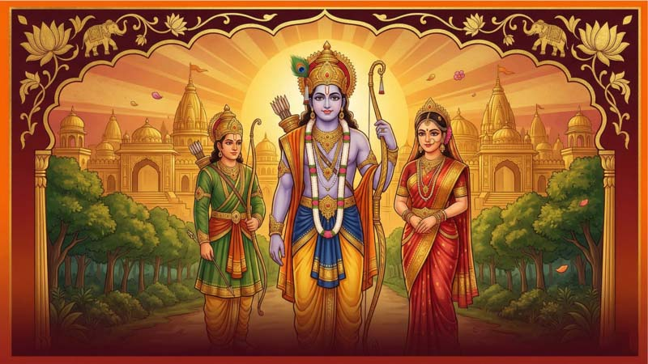
रामायण — भगवान रामको दिव्य गाथा
प्रस्तावना (Introduction)
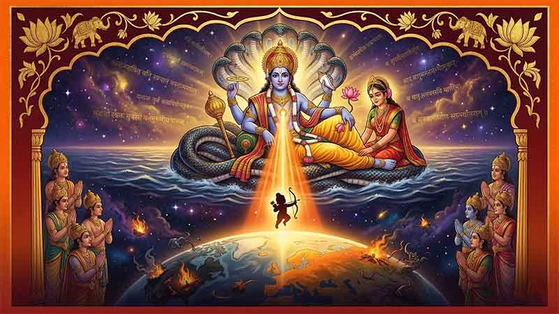
धर्मको रक्षा र भगवान रामको ईश्वरीय अवतार (The Divine Incarnation of Lord Rama)
भगवान रामचन्द्र कुनै काल्पनिक, साधारण वा कुनै महान मनुष्य मात्र हुनुहुन्न। उहाँ सर्वश्रेष्ठ, पूर्ण पुरुषोत्तम भगवान... यसका पालनकर्ता र नियन्त्रक हुनुहुन्छ। परमात्मा भएको कारण प्रत्येक अणुमा र सबै जीवहरूको हृदयमा उहाँको बास छ। रामायण भगवान रामको त्यो अद्भुत शौर्य गाथा हो, जसमा उहाँले रावणमाथि विजय प्राप्त गर्नुभएको थियो। यो मन्त्रमुग्ध पार्ने कथाले अनन्त कालदेखि असंख्य व्यक्तिहरूलाई आनन्द र ज्ञान प्रदान गर्दै आएको छ... पढ्नुहोस् भगवान रामका साहसिक कार्यकलापहरू, उहाँको वनवास, रावणद्वारा रामकी पत्नीको अपहरण, र अन्ततः रामद्वारा दुष्ट रावणलाई दिइएको अद्वितीय शिक्षा।
अध्याय १: प्रारम्भ (Chapter 1: The Beginning)
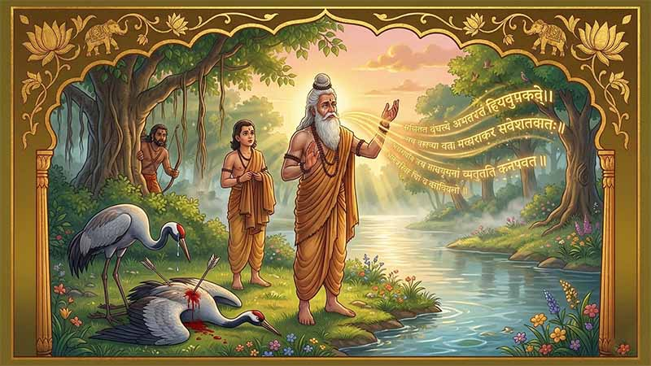
त्रे
ता युगको समय थियो। महान् ऋषि वाल्मीकिले नारदलाई सोध्नुभयो, "हे प्रभु! मलाई भन्नुहोस्, वर्तमान समयमा हजुरको विचारमा सबैभन्दा ज्ञानी, सबैभन्दा सुन्दर, बलियो चरित्र र मूल्यमान्यता भएको, सबैको प्रिय, सबैभन्दा कर्तव्यपरायण र सबैभन्दा दयालु व्यक्ति को हुनुहुन्छ? जसको कोही शत्रु छैन र जो संसारकै सबैभन्दा शक्तिशाली, पराक्रमी र बलवान् पुरुष होस्।"
नारद मुस्कुराउनुभयो र भन्नुभयो, "हे प्रिय वाल्मीकि, तपाईंले उल्लेख गर्नुभएका सबै गुणहरू भएको एउटै व्यक्ति फेला पार्न धेरै गाह्रो छ। यद्यपि, म त्यस्तो एक मानवलाई चिन्छु। अयोध्याका महान् राजा, भगवान राम। इक्ष्वाकु वंशमा जन्मिनुभएका भगवान राम यस्तो व्यक्ति हुनुहुन्छ जससँग तपाईंले भन्नुभएका गुणहरू मात्र होइन, अरू धेरै गुणहरू छन्। उहाँ सबै सद्गुणहरूको प्रतीक हुनुहुन्छ र कुनै पनि मानिसले देखेको अहिलेसम्मकै सर्वश्रेष्ठ राजा हुनुहुन्छ।" त्यसपछि नारदले रामको कथा सुनाउनुभयो। उहाँको युवराजको रूपमा अभिषेक, वनवास, रावणद्वारा सीताको अपहरण, हनुमान र सुग्रीवको सहयोगमा सीताको खोजी, समुद्र तर्ने कार्य, रावणको वध, सीताको अग्निपरीक्षा र अन्ततः रामको अयोध्या फिर्ती।
त्यसपछि नारदले भविष्यवाणी गर्नुभयो, "भगवान रामको राज्यमा, उहाँका प्रजाहरूले सबैभन्दा समृद्ध, शान्तिपूर्ण र रमाइलो समयको अनुभव गर्नेछन्। त्यहाँ कुनै युद्ध, दुःख वा पीडा हुनेछैन। भगवान रामले आफ्नो नश्वर शरीर छोड्नुअघि एघार हजार वर्षसम्म आफ्नो राज्यमा शासन गर्नुहुनेछ। जसले भगवान रामका यी कथाहरू सुन्छन् वा पढ्छन्, तिनीहरू सबै पापहरूबाट मुक्त हुनेछन् र लामो तथा सुखी जीवनको आनन्द लिनेछन्।"
नारद आश्रमबाट प्रस्थान गरेपछि, वाल्मीकि आफ्ना शिष्य भारद्वाजसँगै टहल्न निस्कनुभयो। उहाँ तमसा नदीको किनारमा हिँड्दै हुनुहुन्थ्यो र वरपरको सौन्दर्यबाट मन्त्रमुग्ध हुनुहुन्थ्यो। उहाँले आफ्ना शिष्यलाई बोलाएर भन्नुभयो, "भारद्वाज, हेर त यो ठाउँ कति सुन्दर छ। नदीको किनारमा कुनै हिलो वा फोहोर छैन। नदीको पानी एक पवित्र मानिसको मनजस्तै सफा छ। यो पानीले मलाई स्नान गर्न आमन्त्रित गरिरहेको छ। कृपया मलाई मेरो बोक्राको वस्त्र ल्याइदेऊ, म यो पानीमा पौडी खेल्न चाहन्छु।"
भारद्वाजले आफ्ना गुरुलाई वस्त्र दिनुभयो। वाल्मीकि स्नान गर्नका लागि सफा ठाउँ खोज्दै नदीको किनारमा हिँड्दै हुनुहुन्थ्यो। उहाँले केही पर रातो टाउको भएको क्रौञ्च (सारस) पक्षीको जोडीलाई नदीको किनारमा प्रेमपूर्वक क्रीडा गरिरहेको देख्नुभयो। नजिकैको झाडीमा उहाँले एक आदिवासी शिकारीले आफ्नो तीर ती पक्षीहरूतर्फ ताकेको देख्नुभयो। वाल्मीकिले केही बोल्नुअघि नै शिकारीले आफ्नो तीर चलायो र भाले पक्षीलाई लाग्यो। ढलेको पक्षी पीडाले छटपटायो र घाउबाट रगत बग्न थाल्यो। असहाय पोथी पक्षी आफ्ना साथीको मृत्युमा विलाप गर्दै रुन थाली। यो दर्दनाक दृश्य देखेर वाल्मीकिको हृदय टुट्यो। उहाँले शिकारीतर्फ हेरेर भन्नुभयो, "हे शिकारी, तिमीले प्रेममा मग्न क्रौञ्च पक्षीको जोडीमध्ये एउटालाई मार्यौ। यसको लागि तिमीले जीवनमा कहिल्यै शान्ति पाउनेछैनौ।"
वाल्मीकि आफ्नै शब्द सुनेर छक्क पर्नुभयो। उहाँको मुखबाट निस्केका शब्दहरू एउटा सुन्दर श्लोकको रूपमा थिए। उहाँले भारद्वाजलाई हेरेर भन्नुभयो, "मैले जे भनेँ, तिमीले सुन्यौ? के तिमीलाई लाग्दैन कि यो सुन्दर श्लोक सङ्गीतको साथ गाउन लायक छ? म तिमीलाई बताउँछु, अब उप्रान्त शब्दहरूको यस्तो रूपलाई 'श्लोक' वा कविता भनिनेछ।" भारद्वाजले सहमति जनाए। वाल्मीकि आफ्नो आश्रममा फर्कनुभयो। तर उहाँको मन तमसा नदीको किनारमा घटेको घटनामै अल्झिरहेको थियो। उहाँ आफ्ना विद्यार्थीहरूसँग श्लोकको उत्पत्तिको बारेमा छलफल गरिरहँदा, भगवान ब्रह्मा उहाँको अगाडि प्रकट हुनुभयो। वाल्मीकिले उहाँलाई आदरपूर्वक प्रणाम गर्नुभयो र फलफूल तथा जल अर्पण गर्नुभयो, तर चराहरूको र कविताको विचारले उहाँको मन छाडेको थिएन।
ब्रह्मा मुस्कुराउनुभयो र भन्नुभयो, "हे प्रिय वाल्मीकि, तिमीले उच्चारण गरेको त्यो सुन्दर श्लोक मेरै इच्छाको कारण थियो। अब उप्रान्त यस्ता पद्यहरूलाई 'श्लोक' भनिनेछ। यस्ता सुन्दर श्लोकहरूको प्रयोग गरेर, म तिमीलाई भगवान रामको यात्राको कथा वर्णन गर्ने महाकाव्य रचना गर्न आग्रह गर्दछु। जुन कथा नारदले तिमीलाई सुनाएका थिए। नआत्तियौ, तिमीलाई थाहा नभएका घटनाहरू पनि उचित समयमा तिमीसामु प्रकट हुनेछन्। तिमीले आफ्नो कवितामा जे लेख्छौ, त्यो सत्य हुनेछ। तिम्रो रचना, रामायण, यो पृथ्वी रहुन्जेलसम्म पढिनेछ र गाइनेछ, र तिमी मानिसहरूको हृदयमा सधैंभरि बाँचिरहनेछौ।" यति भनेर ब्रह्मा अन्तर्ध्यान हुनुभयो।
त्यसपछि वाल्मीकि भगवान रामको जीवनका विवरणहरू जान्न ध्यानमा बस्नुभयो। उहाँले आफ्नो जन्मदेखि राज्य स्थापनासम्मको सम्पूर्ण कथा जान्नुभयो। सबै कुरा थाहा पाइसकेपछि उहाँले 'रामायण' महाकाव्य रचना गर्न थाल्नुभयो। उहाँका रचनाहरूमा २४,००० श्लोकहरू थिए र यसलाई सात काण्डहरूमा विभाजन गरिएको थियो। महाकाव्य पूरा गरेपछि, वाल्मीकिले यो कथा कसरी फैलाउने भनेर सोच्न थाल्नुभयो। त्यही बेला दुई साना बालकहरू, लव र कुश उहाँलाई भेट्न आए। लव र कुशले वाल्मीकिलाई प्रणाम गर्दै भने, "हे गुरु वाल्मीकि! हामीलाई थाहा छ हजुरले अहिलेसम्मकै सबैभन्दा सुन्दर कविता रच्नुभएको छ, र हामी मानिसहरूलाई त्यो गीत गाएर सुनाउने कसैको खोजीमा छौं। हामी दाजुभाइ गायक हौं र हजुरले हामीलाई यो गीत सिकाउनुभयो भने हामी आभारी हुनेछौं।"
वाल्मीकि ती दाजुभाइको मधुर स्वरबाट प्रभावित हुनुभयो। उहाँले लव र कुशलाई आफ्ना शिष्यको रूपमा स्वीकार गर्नुभयो र उहाँहरूलाई भगवान रामको गीत सिकाउन थाल्नुभयो। ती प्रतिभाशाली बालकहरूले सजिलै गीत सिके र चाँडै नै आफ्ना श्रोताहरूलाई भगवान रामको कथा गाएर सुनाउन थाले। कविता, जसले विभिन्न भावनाहरू जगाउन सक्थ्यो, जसले सुन्ने जो कोहीको हृदय छुन्थ्यो। ती बालकहरूले ऋषिमुनि र वनवासीहरूलाई गीत गाएर सुनाउन थाले, जो उनीहरूको स्वरबाट मन्त्रमुग्ध हुन्थे। उनीहरूले बालकहरूमाथि उपहारको वर्षा गर्थे र उनीहरूलाई बारम्बार गाउन आग्रह गर्थे। त्यसपछि ती बालकहरू जङ्गलबाट अयोध्याको राजधानीतर्फ लागे।
बिहानीको घाम दरबारको झ्यालबाट भित्र पस्दै थियो, सँगै चिसो हावा पनि। अयोध्या सहर बिस्तारै जाग्दै थियो। अयोध्याका राजा, भगवान राम ओछ्यानबाट उठ्नुभयो र खुला झ्यालबाट बाहिर हेर्नुभयो। दरबारको पर्दाबाट एउटा रमाइलो धुन भित्र आइरहेको थियो। यो एउटा गीत थियो। राम झ्यालतिर हिँड्नुभयो र बाहिर हेर्नुभयो। हातमा वीणा बोकेका दुई साना बालकहरू सडकमा हिँड्दै सुन्दर गीत गाइरहेका थिए। रामले ध्यान दिएर सुन्नुभयो। मनमोहक धुन र सुन्दर शब्दहरूले उहाँलाई झ्यालको छेउमा धेरै बेरसम्म उभिन बाध्य बनायो। उहाँले गीतमा आफ्नो नाम पटक-पटक उच्चारण भएको सुन्नुभयो। बालकहरू उहाँकै प्रशंसा गाइरहेका थिए। 'उनीहरूलाई पुरस्कृत गर्नुपर्छ,' उहाँले सोच्नुभयो। रामले आफ्ना पालेलाई बोलाएर भन्नुभयो, "ती दुई बालकहरूलाई मेरो दरबारमा लिएर आऊ। म उनीहरूको गीत सुन्न र उनीहरूलाई पुरस्कृत गर्न चाहन्छु।"
जब भगवान राम दरबारमा प्रवेश गर्नुभयो, ती बालकहरू पर्खिरहेका थिए। रामको नजर पर्नेबित्तिकै उहाँको हृदयमा अनौठो भावना पैदा भयो। 'यी बालकहरू कति परिचित देखिन्छन्,' उहाँले सोच्नुभयो। 'के मैले यिनीहरूलाई पहिले देखेको छु?' "तिमीहरू को हौ बाबु?" उहाँले सोध्नुभयो। "तिमीहरू कहाँबाट आएका हौ र के गाइरहेका थियौ?"
"मेरो नाम लव हो," लवले भने, "र म उहाँको भाइ कुश हुँ। हामी जङ्गलको एउटा आश्रममा बस्छौं। हे प्रभु, हामीले हाम्रा गुरु, महान् ऋषि वाल्मीकिले रचना गर्नुभएको हजुरको यात्राको कथा गाइरहेका थियौ।" रामले अझै पनि उनीहरूलाई हेरिरहनुभएको थियो। बालकहरू सुन्दर थिए र उनीहरूको अनुहारमा एक स्वर्गीय चमक थियो। उनीहरूको स्वर पहाडको ताजा पानीजस्तै मधुर थियो। बालकहरूलाई हेर्दा उहाँको मनमा भावनाहरूको बाढी आयो, उहाँका आँखा रसाए र स्वर भारी भयो। "ल सुरु गर," रामले भन्नुभयो। लव र कुशले आफ्नो वीणामा तार छेड्दै भगवान रामको गीत, रामायण गाउन सुरु गरे।
अध्याय २: अश्वमेध यज्ञको निमन्त्रणा (Chapter 2: The Invitation for Ashwamedha Yagna)
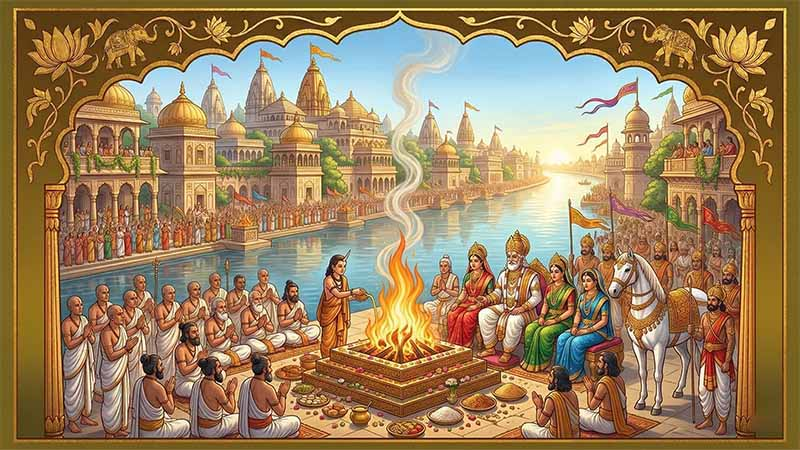
को
सलको विशाल राज्यमा, भगवान मनु स्वयंले निर्माण गर्नुभएको अयोध्या नामक भव्य सहर थियो। यो सहर फराकिला सडकहरू र मार्गहरूले सजिएको थियो, जसमा फूल फुल्ने बिरुवाहरू र झाडीहरू थिए, जसले यसलाई निकै सुन्दर र सुव्यवस्थित रूप दिएको थियो। अयोध्यामा ढोकाहरू, पसलहरू र आवासीय भवनहरू थिए जसलाई सरसफाइ र व्यवस्थापन कायम राख्न रणनीतिक रूपमा राखिएको थियो। सहरमा बासिन्दाहरूको मनोरञ्जनका लागि नाटकघर, बगैंचा र पार्कहरू पनि थिए। जङ्गल र गहिरा खाडलहरूले घेरिएको अयोध्या बाहिरी आक्रमणकारीहरूका लागि अभेद्य थियो। अयोध्याको भव्य दरबारमा राजा दशरथ, एक बुद्धिमान र विद्वान शासक बस्नुहुन्थ्यो। उहाँ शास्त्रहरूमा निपुण हुनुहुन्थ्यो र उच्च शिक्षित सल्लाहकार तथा मन्त्रीहरूले घेरिनुभएको थियो। उहाँहरूको मार्गदर्शनमा दशरथले दृढ हातले राज्यको शासन गर्नुभयो र आफ्ना प्रजाहरूको प्रेम र विश्वास जित्नुभयो।
यद्यपि, राजा दशरथको एउटा ठूलो दुःख थियो। उहाँको कुनै छोरा थिएनन्। धेरै अनुष्ठान, पूजा र यज्ञहरू गर्दा पनि उहाँको प्रयास व्यर्थ भएको थियो। आफ्नो भाग्य बदल्ने अठोट गर्दै, दशरथले 'अश्वमेध यज्ञ' गर्ने निर्णय गर्नुभयो। उहाँका नजिकका सल्लाहकार सुमन्त्रले वशिष्ठ, वामदेव, जाबालि र अन्य जस्ता विद्वान ऋषिहरूलाई बोलाउनुभयो। दशरथको योजना सुनेपछि उहाँहरूले भन्नुभयो, "हे राजन्, तपाईंले बुद्धिमानी निर्णय लिनुभएको छ। अश्वमेध यज्ञले पक्कै पनि तपाईंको इच्छा पूरा गर्नेछ। तपाईंले तुरुन्तै तयारी सुरु गर्नुपर्छ।" दशरथले त्यसपछि आफ्ना मन्त्रीहरूलाई यज्ञको लागि सबै आवश्यक व्यवस्था गर्न आदेश दिनुभयो।
त्यसपछि सुमन्त्रले राजालाई एकातिर लगेर भन्नुभयो, "हे राजन्, मैले ऋष्यशृङ्ग नामक एक महान ऋषिको बारेमा सुनेको छु। उहाँ ऋषि विभाण्डकका छोरा र कश्यपका नाति हुनुहुन्छ। उहाँले तपाईंलाई आफ्नो इच्छा प्राप्त गर्न मद्दत गर्न सक्नुहुन्छ।" दशरथले सोध्नुभयो, "कसरी?" सुमन्त्रले कथा सुनाउन थाले। एकपटक अङ्ग राज्यमा भयानक खडेरी परेको थियो। अङ्गका राजा लोमपाद र उनका मन्त्रीहरूलाई थाहा थियो कि यदि ऋष्यशृङ्गलाई नियमित अतिथिको रूपमा आमन्त्रित गरियो भने उहाँ तिनीहरूको राज्यमा आउनुहुनेछैन। ऋष्यशृङ्गले आफ्नो सम्पूर्ण जीवन आफ्ना बुबा ऋषि विभाण्डकसँग जङ्गलको एउटा आश्रममा बिताउनुभएको थियो र बाहिरी संसारमा कहिल्यै जानुभएको थिएन। उहाँले महिलाको आकर्षण र बाहिरी संसारका सुखसुविधाहरू कहिल्यै अनुभव गर्नुभएको थिएन। त्यसैले लोमपादका मन्त्रीहरूले ऋष्यशृङ्गलाई लोभ्याउन सुन्दरी गणिकाहरूलाई पठाउने योजना बनाए। गणिकाहरूले जङ्गलमा गएर आफ्नो सौन्दर्य र मीठा कुराहरूले ऋष्यशृङ्गलाई मन्त्रमुग्ध पारे र अङ्ग राज्यमा ल्याए। ऋष्यशृङ्गले अङ्ग राज्यमा पाइला टेक्नेबित्तिकै, मुसलधारे वर्षा हुन थाल्यो र खडेरीको अन्त्य भयो। राजा लोमपादले कृतज्ञता स्वरूप आफ्नी छोरी शान्ताको विवाह ऋष्यशृङ्गसँग गरिदिए र ऋष्यशृङ्ग अङ्ग राज्यमै बस्न थाल्नुभयो।
"मलाई ऋष्यशृङ्गको बारेमा जानकारी दिएकोमा धन्यवाद," दशरथले भन्नुभयो। "लोमपाद एक राम्रो साथी हुन् र म व्यक्तिगत रूपमा उहाँलाई आफ्नो ज्वाइँलाई यज्ञ गर्न पठाउन अनुरोध गर्नेछु।" छिट्टै, दशरथ आफ्नी पत्नीहरूसँग अङ्ग राज्यतर्फ प्रस्थान गर्नुभयो। राजा लोमपाद दशरथ र उहाँको परिवारलाई देखेर धेरै खुसी भए र उहाँहरूलाई भव्य स्वागत गरे। केही दिनपछि दशरथले आफ्नो भ्रमणको उद्देश्य बताउनुभयो। लोमपादले खुसीसाथ ऋष्यशृङ्गलाई अयोध्या जान अनुमति दिए र ऋष्यशृङ्गले पनि दशरथको यज्ञको मुख्य पुजारी बन्न स्वीकार गर्नुभयो। दशरथले तुरुन्तै अयोध्यामा दूतहरू पठाएर ऋष्यशृङ्गको भ्रमणको लागि सहरलाई सजाउन र तयार गर्न निर्देशन दिनुभयो। जब उहाँहरू अयोध्या पुग्नुभयो, ऋष्यशृङ्ग सहरको सौन्दर्य र भव्य स्वागत देखेर अत्यन्तै प्रभावित हुनुभयो।
जब वसन्त ऋतु आयो, दशरथले आफ्ना मुख्य पुरोहित ऋषि वशिष्ठलाई बोलाउनुभयो। "हे ऋषि वशिष्ठ, हजुर मेरो पुरोहित र गुरु मात्र नभएर मेरो सबैभन्दा मिल्ने साथी पनि हुनुहुन्छ। म हजुरलाई अश्वमेध यज्ञको लागि सबै व्यवस्था पूर्ण रूपमा भएको सुनिश्चित गर्ने जिम्मेवारी सुम्पन्छु।" वशिष्ठले आश्वस्त पार्नुभयो, "चिन्ता नगर्नुहोस्, मेरो राजा। तपाईंको अश्वमेध यज्ञ कसैले नदेखेको जस्तो भव्य हुनेछ।" वशिष्ठले देशैभरिका मानिसहरूलाई आमन्त्रित गर्न र उनीहरूको लागि वासस्थान, भोजन र अन्य सुविधाहरूको प्रबन्ध गर्न निर्देशन दिनुभयो। उहाँले सरयू नदीको किनारमा यज्ञको लागि वेदी निर्माण गर्न र मिथिलाका राजा जनक, काशीका राजा, केकयका राजा र मगधका राजा लगायत सबै राजाहरूलाई आमन्त्रित गर्न भन्नुभयो। वशिष्ठले अश्वमेध यज्ञको लागि एउटा उत्तम घोडा पनि छान्नुभयो। घोडालाई छाडियो र यसलाई एक वर्षसम्म स्वतन्त्र रूपमा घुम्न दिइयो। घोडाको पछि एउटा ठूलो सेना पनि पठाइयो। छिट्टै नै अतिथिहरू आउन थाले र सहर उत्सवमय बन्यो। सङ्गीतकार, कलाकार र नर्तकहरूले अतिथिहरूको मनोरञ्जन गरे। त्यसपछि, एक शुभ दिनमा, राजा दशरथ र उहाँका पत्नीहरूलाई सरयू नदीको किनारमा नवनिर्मित यज्ञ वेदीमा अभिषेक गरियो। अतिथिहरूले भरिएको मञ्चबाट वशिष्ठले घोषणा गर्नुभयो, "हामी घोडा नफर्किएसम्म पर्खनेछौं। तबसम्म अयोध्या सहरको आतिथ्य र उत्सवको आनन्द लिनुहोस्।"
अध्याय ३: राम, लक्ष्मण, भरत र शत्रुघ्नको जन्म (Chapter 3: Birth of Ram, Lakshman, Bharat and Shatrughna)
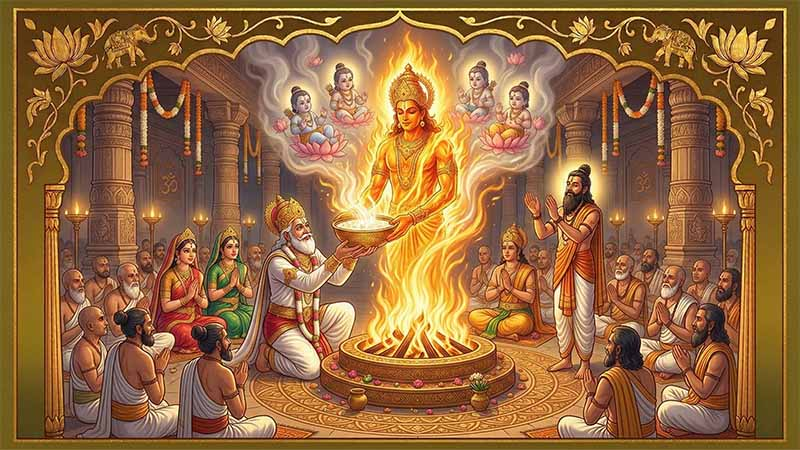
क
रिब एक वर्षपछि, अश्वमेध यज्ञको घोडा अयोध्या फर्कियो। वशिष्ठ र अन्य पुरोहितहरूले यज्ञको आगो बालेर अनुष्ठान सुरु गर्नुभयो। राजा दशरथ आफ्ना तीन पत्नीहरू—कौशल्या, कैकेयी र सुमित्रासँगै पुरोहितहरूको छेउमा बस्नुभयो। देशैभरिबाट आएका अतिथिहरू र अयोध्याका मानिसहरूले भरिएको मञ्चबाट यज्ञको सुगन्धित धुवाँ सहरभरि फैलियो। वशिष्ठले राजा दशरथलाई बोलाएर भन्नुभयो, "अब हामीले यज्ञको लागि पवित्र घोडाको आहुति दिनुपर्छ।" रानी कौशल्याले यो कार्य पूरा गर्नुभयो। त्यसपछि वशिष्ठले अश्वमेध यज्ञ सफलतापूर्वक सम्पन्न भएको घोषणा गर्दै महान् ऋषि ऋष्यशृङ्गलाई 'पुत्रेष्टि यज्ञ' सञ्चालन गर्न आमन्त्रण गर्नुभयो, जसको फलस्वरुप राजालाई उत्तराधिकारी प्राप्त हुन सकोस्। ऋष्यशृङ्गले आफ्नो आसनबाट उठेर पुत्रेष्टि यज्ञ सुरु गर्नुभयो।
यसैबीच, स्वर्गमा एउटा ठूलो सङ्कट आइपरेको थियो। भगवान ब्रह्माको वरदान पाएर शक्तिशाली बनेको राक्षस राजा रावणले देवताहरूमाथि आतङ्क मच्चाइरहेको थियो। रावणलाई रोक्न नसकेर देवताहरूले ब्रह्मासँग गुहार मागे। ब्रह्माले देवताहरूलाई भन्नुभयो, "रावणले मसँग वरदान माग्दा देवता, गन्धर्व, यक्ष र राक्षसहरूबाट आफूलाई अवध्य (मार्न नसकिने) बनाउन मागेको थियो। तर आफ्नो अहङ्कारका कारण उसले मानवलाई यस सूचीमा समावेश गरेन। त्यसैले अब कुनै मानवले मात्र उसको वध गर्न सक्छ।" त्यही क्षण, भगवान विष्णु त्यहाँ प्रकट हुनुभयो। देवताहरूले उहाँलाई राजा दशरथका रानीहरूको कोखबाट मानव अवतारको रूपमा जन्म लिन प्रार्थना गरे। विष्णुले मुस्कुराउँदै रावणको वध गर्न दशरथको पुत्रको रूपमा जन्म लिने वाचा गर्नुभयो।
यता अयोध्यामा, ऋष्यशृङ्ग पूर्ण भक्तिभावका साथ यज्ञ गरिरहनुभएको थियो। अचानक, यज्ञको अग्नि कुण्डबाट एउटा विशाल र चम्किलो दिव्य आकृति प्रकट भयो। उहाँको हातमा खिर (पायस) ले भरिएको एउटा सुनौलो कचौरा थियो। ती दिव्य पुरुषले दशरथलाई त्यो खिर आफ्ना रानीहरूलाई खुवाउन निर्देशन दिनुभयो। दशरथले आदरपूर्वक त्यो कचौरा ग्रहण गर्नुभयो। उहाँ तुरुन्तै कौशल्याको कक्षमा जानुभयो र आधा खिर उहाँलाई दिनुभयो। त्यसपछि उहाँ सुमित्राकहाँ जानुभयो र बाँकी रहेकोमध्ये आधा खिर उहाँलाई दिनुभयो। त्यसपछि उहाँले कैकेयीलाई बाँकी रहेकोमध्ये आधा खिर दिनुभयो र अन्तमा फेरि सुमित्राकहाँ फर्केर कचौरामा बाँकी रहेको सबै खिर दिनुभयो। छिट्टै तीनै जना रानीहरू गर्भवती हुनुभयो। उचित समयमा, कौशल्याले रामलाई जन्म दिनुभयो। कैकेयीले भरतलाई जन्म दिनुभयो भने सुमित्राले लक्ष्मण र शत्रुघ्नलाई जन्म दिनुभयो। अयोध्या सहर खुसीले गदगद भयो र महिनौंसम्म उत्सव मनाइयो। चारै जना राजकुमारहरू बलिया, ज्ञानी र गुणी युवाको रूपमा हुर्किए। लक्ष्मण सधैं रामसँगै हुन्थे र उहाँको आज्ञा पालन गर्थे। त्यसैगरी, भरत र शत्रुघ्नबीच गहिरो आत्मीयता थियो। राजा दशरथ आफ्ना योग्य छोराहरू देखेर अत्यन्तै गर्व गर्नुहुन्थ्यो।
एकदिन, महान् ऋषि विश्वामित्र अयोध्या आउनुभयो। राजा दशरथले उहाँलाई पूर्ण सम्मानका साथ स्वागत गर्दै भन्नुभयो, "हे महर्षि, हजुरलाई स्वागत छ। आज्ञा गर्नुहोस्, म हजुरको लागि के गर्न सक्छु?" विश्वामित्रले भन्नुभयो, "हे राजन्! म एउटा महायज्ञ गरिरहेको छु, तर मारिच र सुबाहु नामका दुई क्रुर राक्षसहरूले मेरो आश्रममा आक्रमण गरेर यज्ञलाई अपवित्र पारिरहेका छन्। म हजुरसँग रामलाई १० दिनको लागि मेरो साथमा पठाउन अनुरोध गर्दछु। रामले मात्र ती राक्षसहरूको वध गर्न सक्छन्।" विश्वामित्रको कुरा सुनेर दशरथ स्तब्ध हुनुभयो। उहाँले भन्नुभयो, "मेरो छोरा राम त भर्खर १६ वर्षको पनि भएको छैन। उसले ती मायावी राक्षसहरूसँग कसरी लड्न सक्छ? म मेरो सम्पूर्ण सेना लिएर हजुरसँग आउँछु, तर कृपया रामलाई नमाग्नुहोस्।" राजाको यो कुरा सुनेर विश्वामित्र क्रोधित हुनुभयो र दरबार छोडेर जान लाग्नुभयो।
स्थिति बिग्रन लागेको देखेर ऋषि वशिष्ठले दशरथलाई सम्झाउँदै भन्नुभयो, "हे राजन्, महर्षि विश्वामित्रसँग रामलाई पठाउनुहोस्। विश्वामित्र स्वयं एक महान् योद्धा र अस्त्रशस्त्रका ज्ञाता हुनुहुन्छ। उहाँको साथमा हुँदा रामलाई कसैले केही गर्न सक्दैन।" गुरु वशिष्ठको सल्लाहपछि दशरथले भारी मनले राम र लक्ष्मणलाई बोलाएर विश्वामित्रको साथमा जान आज्ञा दिनुभयो। विश्वामित्रले राजकुमारहरूलाई आशीर्वाद दिनुभयो र उहाँहरू अयोध्याबाट प्रस्थान गर्नुभयो। लामो पैदल यात्रापछि उहाँहरू सरयू नदीको किनारमा पुग्नुभयो। विश्वामित्रले राम र लक्ष्मणलाई नदीको पवित्र जलले स्नान गर्न भन्नुभयो। त्यसपछि उहाँले राजकुमारहरूलाई 'बला' र 'अतिबला' नामका दुई शक्तिशाली मन्त्रहरू सिकाउनुभयो, जसले उहाँहरूलाई भोक, तिर्खा, थकान र रोगहरूबाट जोगाउने थियो। त्यस रात, राजमहलको सुखसुविधामा हुर्केका राजकुमारहरूले खुला आकाशमुनि घाँसको ओछ्यानमा शान्तिपूर्वक निदाए।
अध्याय ४: ताडका वध (Chapter 4: The Killing of Tadaka) [cite: 164]
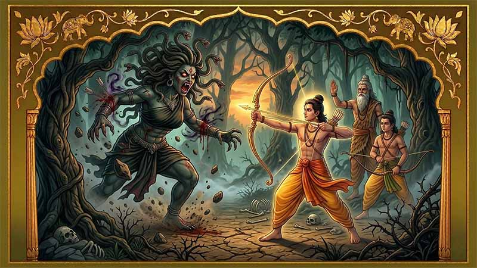
रा
म र लक्ष्मण झिसमिसे बिहानीमै उठे [cite: 165]। सूर्यको पहिलो किरणले सरयू नदीको पानीमा सुनौलो रङ छरिरहेको थियो [cite: 165]। नदीको किनारमा बस्नुभएका विश्वामित्रले शान्त मुस्कानका साथ सूर्योदय हेरिरहनुभएको थियो [cite: 166]। राजकुमारहरूतर्फ फर्केर उहाँले भन्नुभयो, "बालकहरू, नदीमा गएर स्नान गर [cite: 167]। हामी छिट्टै प्रस्थान गर्नेछौं [cite: 167]।" आफूलाई ताजा बनाएपछि, उहाँहरू तीनै जना आफ्नो यात्रामा निस्कनुभयो [cite: 168]। दिउँसो उहाँहरू गङ्गा र सरयू नदीको सङ्गममा पुग्नुभयो, जहाँ हरियालीको बीचमा एउटा सुन्दर आश्रम थियो [cite: 168]। रामले त्यो सुन्दर आश्रमको बारेमा सोध्दा विश्वामित्रले मुस्कुराउँदै भन्नुभयो, "यो प्रेम र कामवासनाका देवता कन्दर्प (मदन) को बासस्थान थियो [cite: 169]। एकदिन भगवान शिव यसै आश्रम नजिकैबाट जाँदै हुनुहुन्थ्यो, कन्दर्पले शिवको मनमा वासना जगाउने प्रयास गरे [cite: 169]। क्रोधित शिवले कन्दर्पलाई क्षणभरमै खरानी बनाइदिनुभयो [cite: 169]। त्यसबेलादेखि कन्दर्पलाई 'अनङ्ग' (शरीर नभएको) भन्न थालियो र यो ठाउँ 'अङ्ग' को नामले चिनिन थाल्यो [cite: 169]।" त्यो रात उहाँहरूले त्यही आश्रममा विश्राम गर्नुभयो र अर्को बिहान डुङ्गाबाट नदी पार गर्न थाल्नुभयो [cite: 170]。
डुङ्गा नदीमा अघि बढ्दै गर्दा, एउटा ठूलो र डरलाग्दो आवाज सुनियो [cite: 171]। रामले त्यो आवाजको कारण सोध्दा विश्वामित्रले भन्नुभयो, "उत्तरमा रहेको कैलाश पर्वतमा भगवान ब्रह्माले आफ्नो संकल्पबाट एउटा ताल निर्माण गर्नुभएको थियो, जसलाई मानसरोवर भनिन्छ [cite: 172]। त्यही तालबाट सरयू नदी बग्दै आएर यहाँ गङ्गामा मिल्छिन् [cite: 172]। यी दुई नदीहरूको सङ्गमले गर्दा नै यो आवाज आएको हो [cite: 172]। नदीहरूलाई प्रणाम गर [cite: 172]।" राम र लक्ष्मणले पवित्र जललाई स्पर्श गर्दै प्रणाम गर्नुभयो [cite: 173]। नदी पार गरेर उहाँहरू दक्षिणी किनारमा पुग्नुभयो र एउटा डरलाग्दो, घना जङ्गलमा प्रवेश गर्नुभयो [cite: 174]。
रामले यो जङ्गलको रहस्य सोध्दा विश्वामित्रले भन्नुभयो, "धेरै वर्षअघि देवराज इन्द्रले वृत्तासुर नामक एक ब्राह्मण राक्षसलाई मारेका थिए [cite: 175]। तर ब्राह्मणको हत्या गरेका कारण इन्द्रले ठूलो मूल्य चुकाउनुपर्यो [cite: 175]। उहाँको शरीर फोहोर र दुर्गन्धले भरियो [cite: 175]। पछि देवता र ऋषिहरूले इन्द्रलाई यही ठाउँमा ल्याएर पवित्र जलले पखालेका थिए [cite: 175]। इन्द्रको शरीरबाट निस्केको मलमूत्रबाट यहाँ 'मलद' र 'करुष' नामका दुईवटा सहरहरूको निर्माण भयो [cite: 175]।"
"तर केही वर्षपछि," विश्वामित्रले अगाडि भन्नुभयो, "ताडका नामकी एक डरलाग्दी यक्षीले यी दुई सहरमाथि आक्रमण गरी र नष्ट गरिदिई [cite: 176]। भगवान ब्रह्माको वरदानले गर्दा ताडकासँग हजार हात्तीको बल थियो [cite: 176]। उनको विवाह सुन्द नामको राक्षससँग भएको थियो र उनीहरूको मारिच नामको छोरा थियो [cite: 176]। सुन्दले एकपटक महान् ऋषि अगस्त्यमाथि आक्रमण गर्दा ऋषिले उसलाई मारिदिनुभयो [cite: 176]। बदला लिन ताडका र मारिचले ऋषिमाथि आक्रमण गरे [cite: 176]। क्रोधित ऋषि अगस्त्यले उनीहरूलाई डरलाग्दा र नरभक्षी राक्षस बन्ने श्राप दिनुभयो [cite: 176]। त्यही समयदेखि ताडका र मारिचले यस जङ्गलमा आतङ्क मच्चाइरहेका छन् [cite: 176]।" "राम, म चाहन्छु तिमीले यो दुष्ट राक्षस्नी ताडकाको वध गर र यी सहरहरूलाई उसको आतङ्कबाट मुक्त गर," विश्वामित्रले भन्नुभयो [cite: 177]。
रामले केही हिचकिचाउँदै भन्नुभयो, "तर महर्षि, एउटी महिलाको हत्या गर्नु के उचित होला र? यो त मैले पढेका शास्त्रहरूको विरुद्धमा छ [cite: 178]।" विश्वामित्रले सम्झाउँदै भन्नुभयो, "राम, एउटा राजकुमारको रूपमा तिम्रो पहिलो कर्तव्य भनेको आफ्ना प्रजाहरूको सुरक्षा र समृद्धि हो [cite: 179]। यसका लागि तिमीले कहिलेकाहीं अप्रिय लाग्ने कार्यहरू पनि गर्नुपर्ने हुन्छ [cite: 179]। यो तिम्रो धर्म हो [cite: 179]।" गुरुको आज्ञा पाएपछि रामले दृढताका साथ आफ्नो धनुष उठाउनुभयो र डोरी तान्नुभयो [cite: 180]। धनुषको टङ्कारले जङ्गल गुञ्जायमान भयो र ताडका निद्राबाट ब्युँझिई [cite: 181]। क्रोधित हुँदै उनी राम र लक्ष्मण भएतिर दौडिई [cite: 181]। उसले हावालाई सुँघ्दै मानिसको गन्ध पहिचान गरी [cite: 182]। राम र लक्ष्मणलाई देख्नेबित्तिकै उनी उहाँहरूतर्फ जाइलागी [cite: 182]। ताडकाले जादुई शक्ति प्रयोग गरेर धुलोको आँधी ल्याई र ढुङ्गाहरू बर्साउन थाली [cite: 183]। रामले तुरुन्तै आफ्नो धनुषबाट बाणहरूको वर्षा गर्दै ताडकाका दुवै हात काटिदिनुभयो [cite: 184]। लक्ष्मणले पनि बाण प्रहार गर्दै उसको नाक र कान काटिदिनुभयो [cite: 185]。
तैपनि ताडका रोकिएकी थिइन [cite: 186]। उसले आफ्नो जादुई शक्तिले भेष बदल्दै राजकुमारहरूलाई झुक्याउने प्रयास गरी [cite: 186]। ऊ अदृश्य भएर विभिन्न दिशाबाट आक्रमण गर्न थाली [cite: 187]। यो देखेर विश्वामित्रले भन्नुभयो, "राम, यो दुष्ट प्राणीलाई अब दया नदेखाऊ [cite: 187]। घाम अस्ताउनुअघि नै यसको वध गर, किनकि रात परेपछि राक्षसहरू झन् शक्तिशाली हुन्छन् [cite: 187]।" अन्य कुनै विकल्प नदेखेपछि रामले आफ्नो तरकसबाट एउटा प्राणघातक अस्त्र निकाल्नुभयो [cite: 188]। बिजुली जस्तै चम्किँदै त्यो बाणले सिधै ताडकाको छाती छेड्यो र उनी भुइँमा ढलेर तत्कालै प्राण त्यागिन् [cite: 189]। विश्वामित्र रामको कार्यबाट अत्यन्तै खुसी हुनुभयो [cite: 190]। उहाँले रामलाई आशीर्वाद दिँदै भन्नुभयो, "म तिम्रो बहादुरीबाट धेरै खुसी छु [cite: 190]। म तिमीलाई केही दिव्य अस्त्रहरू प्रदान गर्नेछु जसले तिमीलाई कुनै पनि शत्रुलाई परास्त गर्न मद्दत गर्नेछ [cite: 190]।" त्यसपछि विश्वामित्रले रामलाई ती दिव्य अस्त्रहरू र तिनलाई प्रयोग गर्ने मन्त्रहरू सिकाउनुभयो [cite: 191]। "आज हामी यहीँ विश्राम गर्नेछौं," विश्वामित्रले भन्नुभयो [cite: 191]। "भोलि हामी हाम्रो यात्रा अगाडि बढाउनेछौं [cite: 192]।"
अध्याय ५: भगीरथ र गङ्गा (Chapter 5: Bhagirath and Ganga) [cite: 193]
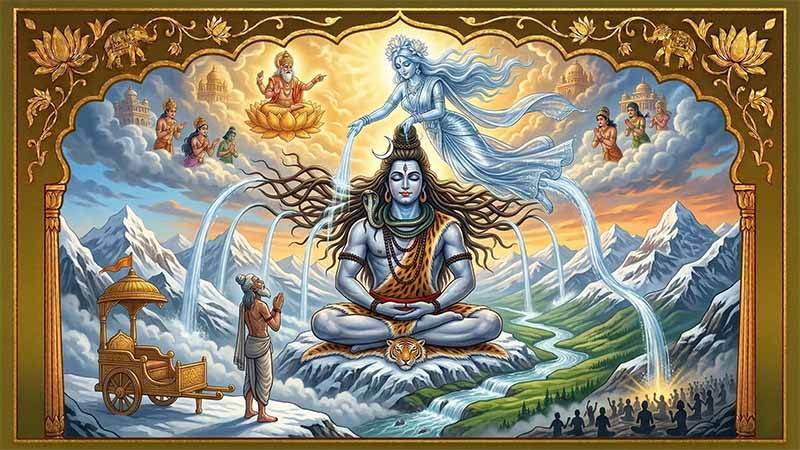
अ
र्को बिहान, राम र लक्ष्मण उत्सुकताका साथ विश्वामित्रकहाँ जानुभयो [cite: 194]। उहाँहरूको हृदय उत्साहले भरिएको थियो [cite: 194]। "हे महर्षि, हामी हजुरको सेवामा छौं [cite: 195]। आज्ञा गर्नुहोस्, हामी हजुरको लागि अरू के गर्न सक्छौं?" रामले प्रसन्न मुद्रामा सोध्नुभयो [cite: 195]। विश्वामित्रले रहस्यमयी मुस्कानका साथ भन्नुभयो, "मिथिलाका राजा जनकले एउटा महायज्ञको आयोजना गरिरहनुभएको छ [cite: 196]। हामी यो यज्ञमा भाग लिन मिथिला जानेछौं [cite: 196]। तिमीहरू पनि हामीसँगै जानुपर्छ [cite: 196]। राजा जनकसँग एउटा यस्तो विशेष र बहुमूल्य शिव धनुष छ, जुन तिमीहरूलाई रोचक लाग्न सक्छ [cite: 196]।" रामको उत्सुकता बढ्यो [cite: 197]। "त्यो कस्तो धनुष हो?" उहाँले अगाडि झुक्दै सोध्नुभयो [cite: 197]। "त्यो धनुष यति शक्तिशाली छ कि देवता, गन्धर्व, असुर र राक्षसहरूले पनि यसको डोरी तान्न सकेका छैनन् [cite: 198]। धेरै राजा र राजकुमारहरूले प्रयास गरे, तर सबै असफल भए [cite: 198]। देवताहरूले यो धनुष जनकका पूर्वजहरूलाई वरदान स्वरूप दिएका थिए र राजा जनकले यसलाई एक पवित्र धरोहरको रूपमा दिनहुँ पूजा गर्दै आउनुभएको छ [cite: 198]।" राम र लक्ष्मण दुवैले त्यो धनुष हेर्ने इच्छा व्यक्त गर्नुभयो [cite: 199]। "हामीलाई हजुरसँगै मिथिला लैजानुहोस्," रामले भन्नुभयो [cite: 199]。
छिट्टै विश्वामित्र, राम, लक्ष्मण र आश्रमका अन्य ऋषिमुनिहरू मिथिलातर्फ प्रस्थान गर्नुभयो [cite: 200]। सूर्य क्षितिजमा डुब्न लाग्दा, उहाँहरू शोन नदीको किनारमा पुग्नुभयो [cite: 200]। "आज राती हामी यहीँ विश्राम गर्नेछौं," विश्वामित्रले भन्नुभयो [cite: 201]। "भोलि बिहानै हाम्रो यात्रा पुनः सुरु हुनेछ [cite: 201]।" सबैले नदीमा स्नान गरेर सन्ध्याकालीन प्रार्थना गरे [cite: 202]। त्यसपछि उहाँहरू आगो बालेर विश्वामित्रका कथाहरू सुन्न भेला हुनुभयो [cite: 202]। रामको प्रश्नको उत्तर दिँदै विश्वामित्रले गङ्गा नदीको उत्पत्तिको कथा सुनाउन थाल्नुभयो [cite: 203]। "प्राचीन कालमा, हिमालयकी पत्नी मैनाले दुई छोरीहरूलाई जन्म दिइन्—गङ्गा र उमा [cite: 204]। गङ्गा देवताहरूको सेवा गर्न स्वर्ग गइन् [cite: 204]। कान्छी छोरी उमाले भने भगवान शिवलाई पतिको रूपमा पाउन कठोर तपस्या गरिन् र शिवले पनि उनको भक्तिबाट प्रसन्न भएर उनीसँग विवाह गर्नुभयो [cite: 204]।"
"त्यसै समयमा, अयोध्यामा सागर नामका एक प्रतापी राजा राज्य गर्थे [cite: 205]। उनका दुई पत्नीहरू थिए—केशिनी र सुमति [cite: 205]। सन्तान नभएका कारण सागरले आफ्नी पत्नीहरूसँगै हिमालयमा गएर कठोर तपस्या गरे [cite: 205]। महर्षि भृगुले उनीहरूलाई वरदान दिँदै भन्नुभयो—एउटी पत्नीले एउटा बलवान् छोरा जन्माउनेछिन् भने अर्कीले ६०,००० छोराहरू जन्माउनेछिन् [cite: 205]। समयक्रममा केशिनीले असमञ्ज नामको एउटा छोरा जन्माइन् र सुमतिले ६०,००० छोराहरू जन्माइन् [cite: 205]।" "दुर्भाग्यवश, असमञ्ज अत्यन्तै क्रुर थियो र प्रजाहरूलाई दुःख दिन्थ्यो [cite: 206]। राजा सागरले दिक्क भएर उसलाई राज्यबाट निकाला गरे [cite: 206]। तर असमञ्जका छोरा अंशुमान भने धेरै दयालु र गुणी थिए [cite: 206]। एकपटक राजा सागरले अश्वमेध यज्ञ गर्ने निर्णय गरे [cite: 206]। तर देवराज इन्द्रले भेष बदलेर त्यो यज्ञको घोडा चोरेर लगे [cite: 206]। सागरले आफ्ना ६०,००० छोराहरूलाई घोडा खोज्न पठाए [cite: 206]।" "ती ६०,००० छोराहरूले पृथ्वीभरि खोजे तर घोडा पाएनन् [cite: 207]। त्यसपछि उनीहरूले जमिन खन्न थाले र पाताल लोक पुगे [cite: 207]। त्यहाँ उनीहरूले महान् ऋषि कपिललाई ध्यानमग्न अवस्थामा देखे र घोडा पनि त्यहीँ चरिरहेको थियो [cite: 207]। क्रुरताले भरिएका ती छोराहरूले ऋषि कपिललाई चोर भन्दै आक्रमण गरे [cite: 207]। ध्यान भङ्ग भएका ऋषिले क्रोधित हुँदै आँखा खोल्नेबित्तिकै ती ६०,००० छोराहरू क्षणभरमै खरानीमा परिणत भए [cite: 207]।"
"धेरै दिनसम्म छोराहरू नफर्केपछि सागरले नाति अंशुमानलाई खोज्न पठाए [cite: 208]। अंशुमानले पाताल लोकमा आफ्ना काकाहरूको खरानी मात्र फेला पारे [cite: 208]। त्यही बेला पक्षीराज गरुड त्यहाँ प्रकट भएर भने—'कपिल ऋषिको क्रोधले तिम्रा काकाहरू भष्म भएका हुन् [cite: 208]। उनीहरूको मुक्तिको लागि स्वर्गबाट गङ्गा नदीलाई पृथ्वीमा ल्याएर यो खरानी पखाल्नुपर्छ [cite: 208]।'" "अंशुमानले घोडा फर्काएर यज्ञ पूरा गराए [cite: 209]। सागरपछि अंशुमान र उनका छोरा दिलीप राजा भए, तर कसैले पनि गङ्गालाई पृथ्वीमा ल्याउन सकेनन् [cite: 209]। अन्ततः दिलीपका छोरा भगीरथले आफ्नो राज्य मन्त्रीहरूलाई सुम्पेर गङ्गालाई ल्याउन कठोर तपस्या गरे [cite: 209]।"
"हजारौं वर्षको तपस्यापछि ब्रह्मा प्रकट हुनुभयो र भन्नुभयो—'भगीरथ, म गङ्गालाई पृथ्वीमा पठाउन तयार छु [cite: 210]। तर गङ्गाको वेग यति तीव्र छ कि पृथ्वीले त्यो थाम्न सक्दैन [cite: 210]। यसका लागि तिमीले भगवान शिवलाई गङ्गाको वेग आफ्नो जटामा धारण गर्न प्रार्थना गर्नुपर्छ [cite: 210]।'" "भगीरथले भगवान शिवको तपस्या गरे [cite: 211]। शिव प्रसन्न भएर गङ्गालाई आफ्नो जटामा धारण गर्न तयार हुनुभयो [cite: 211]। स्वर्गबाट तीव्र वेगमा झरेकी गङ्गालाई शिवले आफ्नो जटामा थुनेर शान्त बनाउनुभयो र सातवटा धारामा पृथ्वीमा प्रवाहित गरिदिनुभयो [cite: 211]। एउटा धारा भगीरथको रथको पछि-पछि बग्न थाल्यो [cite: 211]।" "बाटोमा गङ्गाको वेगले जन्हु ऋषिको यज्ञशाला बगाइदियो [cite: 212]। क्रोधित ऋषिले गङ्गाको सम्पूर्ण पानी पिइदिनुभयो [cite: 212]। पछि देवता र भगीरथको प्रार्थनापछि ऋषिले गङ्गालाई आफ्नो कानबाट बाहिर निकालिदिनुभयो [cite: 212]। त्यसैले गङ्गालाई 'जान्हवी' पनि भनिन्छ [cite: 212]।" "अन्ततः गङ्गा पाताल लोक पुगिन् र राजा सागरका ६०,००० छोराहरूको खरानीलाई पखालिन् [cite: 213]। यसरी पवित्र जलको स्पर्शले उनीहरूको आत्माले स्वर्गमा स्थान पायो [cite: 213]। त्यसै दिनदेखि गङ्गालाई 'भागीरथी' पनि भनिन्छ किनकि भगीरथकै अथक प्रयासले उनी पृथ्वीमा आएकी थिइन् [cite: 213]।"
विश्वामित्रले कथा टुङ्ग्याउनुभयो [cite: 214]। राम र लक्ष्मण यो अद्भुत कथा सुनेर मन्त्रमुग्ध हुनुभयो [cite: 214]। रात धेरै छिप्पिसकेको थियो र उहाँहरूको लामो यात्राको थकान पनि थियो [cite: 215]। विश्वामित्रको आज्ञा पाएर राजकुमारहरू गहिरो निद्रामा पर्नुभयो [cite: 215]。
अध्याय ६: समुद्र मन्थन र अहल्याको उद्धार (Chapter 6: Churning of the Oceans and the Curse of Ahalya) [cite: 216]
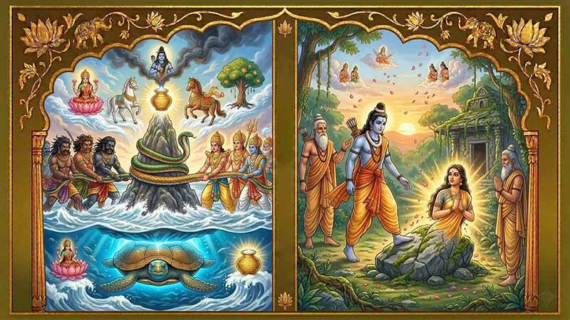
अ
र्को बिहान, राम र लक्ष्मण उत्सुकताका साथ उठे [cite: 217]। उहाँहरूले पवित्र गङ्गा नदीमा स्नान गरेर आफूलाई शुद्ध गर्नुभयो [cite: 217]। त्यसपछि डुङ्गाको सहायताले नदी पार गरेर उहाँहरू अर्को किनारमा पुग्नुभयो, जहाँ विश्वामित्र र अन्य ऋषिहरू पर्खिरहनुभएको थियो [cite: 218]। यात्रा अगाडि बढाउँदै गर्दा, उहाँहरू एउटा सुन्दर सहरको नजिक पुग्नुभयो [cite: 219]। रामले उत्सुक हुँदै विश्वामित्रलाई सोध्नुभयो, "हे महर्षि, यो कुन ठाउँ हो? र यो भव्य सहरमा कसले शासन गर्छ?" [cite: 220] विश्वामित्रले मुस्कुराउँदै कथा सुनाउन सुरु गर्नुभयो, "यो विशाल नगर हो र यसको इतिहास निकै लामो छ [cite: 221]। सत्य युगमा, राजा दक्षका दुई छोरीहरू थिए—दिति र अदिति, जसको विवाह महान् ऋषि कश्यपसँग भएको थियो [cite: 221]। दितिका छोराहरूलाई दैत्य (असुर) र अदितिका छोराहरूलाई आदित्य (देवता) भनिन्थ्यो [cite: 221]। दुवै पक्ष अमरत्व प्राप्त गर्न चाहन्थे [cite: 221]। त्यसैले उनीहरू मिलेर अमरत्वको अमृत निकाल्न समुद्र मन्थन गर्ने निर्णय गरे [cite: 221]।"
"उनीहरूले मन्दराचल पर्वतलाई मदानी र विशाल वासुकी नागलाई डोरीको रूपमा प्रयोग गरे [cite: 222]। मन्थन सुरु भयो [cite: 222]। देवताहरूले वासुकीको पुच्छर र असुरहरूले टाउको ताने [cite: 222]। हजारौं वर्षसम्म मन्थन चलिरह्यो [cite: 222]। तर लगातार तान्दा वासुकी नागलाई पीडा भयो र उसले आफ्नो मुखबाट डरलाग्दो हलाहल विष ओकल्यो [cite: 222]। त्यो विषले सम्पूर्ण सृष्टि नै नष्ट गर्ने खतरा बढ्यो [cite: 222]।" "त्रसित भएका देवता र असुरहरूले भगवान शिवको प्रार्थना गरे [cite: 223]। भगवान शिवले त्यो भयानक विष पिउनुभयो र त्यसलाई आफ्नो घाँटीमै रोकेर राख्नुभयो [cite: 223]। विषको प्रभावले उहाँको घाँटी नीलो भयो, र त्यस दिनदेखि उहाँलाई 'नीलकण्ठ' भनेर पुजिन थालियो [cite: 223]।" "तर सङ्कट यतिमै रोकिएन [cite: 224]। मन्दराचल पर्वत समुद्रको गहिराइमा डुब्न थाल्यो [cite: 224]। तब भगवान विष्णुले विशाल कूर्म (कछुवा) को अवतार लिएर पर्वतलाई आफ्नो पिठ्युँमा अड्याउनुभयो र मन्थन पुनः सुरु भयो [cite: 224]। धेरै वर्षपछि, भगवान धन्वन्तरी हातमा अमृतको कलश लिएर समुद्रबाट प्रकट हुनुभयो [cite: 224]। मन्थनबाट अप्सराहरू र वारुणी (मदिराकी देवी) पनि निस्किए [cite: 224]।"
"अन्ततः देवता र असुरहरूबीच अमृतको लागि ठूलो युद्ध भयो [cite: 225]। भगवान विष्णुको सहयोगमा देवताहरूले असुरहरूलाई पराजित गरे र अमृत पिएर अमर बने [cite: 225]। इन्द्र स्वर्गको राजा बने [cite: 225]।" "आफ्ना छोराहरूको हारबाट दुःखी भएकी दितिले इन्द्रलाई मार्न सक्ने छोरा पाउनका लागि कश्यप ऋषिको कठोर तपस्या गरिन् [cite: 226]। तर इन्द्रले छल गरेर दितिको सेवा गर्ने बहानामा उनको कमजोरी पत्ता लगाए [cite: 226]। एकदिन दिउँसो सुत्दा दितिले अन्जानमा गल्ती गरिन्, जसको फाइदा उठाएर इन्द्रले उनको गर्भमा प्रवेश गरी आफ्नो वज्रले गर्भलाई ४९ टुक्रा पारिदिए [cite: 226]। ती ४९ टुक्राहरू पछि गएर 'मरुत' (हावाका देवता) को रूपमा चिनिए [cite: 226]।" विश्वामित्रले अगाडि भन्नुभयो, "राम, यो विशाल नगर इक्ष्वाकु वंशका राजा विशालले स्थापना गरेका हुन् [cite: 227]। अहिले यहाँ राजा सुमतिले शासन गर्छन् [cite: 227]।" राजा सुमतिले विश्वामित्र, राम र लक्ष्मणलाई भव्य स्वागत गरे [cite: 228]। उहाँहरूले त्यो रात विशाल नगरमै विश्राम गर्नुभयो र अर्को बिहान मिथिलातर्फ प्रस्थान गर्नुभयो [cite: 228]。
बाटोमा हिँड्दै गर्दा, रामले जङ्गलको बीचमा एउटा सुनसान तर सुन्दर आश्रम देख्नुभयो [cite: 229]। त्यहाँ कुनै जीवजन्तु वा मानिसको सङ्केत थिएन [cite: 229]। रामले अचम्म मान्दै सोध्नुभयो, "महर्षि, यो सुनसान आश्रम कसको हो?" [cite: 230] विश्वामित्रले गहिरो सास फेर्दै भन्नुभयो, "धेरै वर्षअघि यो महान् ऋषि गौतम र उहाँकी सुन्दर पत्नी अहल्याको आश्रम थियो [cite: 231]। एकदिन ऋषि गौतम स्नान गर्न नदीमा गएको बेला, इन्द्रले ऋषिको भेष धारण गरेर आश्रममा प्रवेश गरे र अहल्यासँग प्रेम प्रस्ताव राखे [cite: 231]। अहल्याले इन्द्रलाई चिनेर पनि आफ्नो कामवासना रोक्न सकिनन् र उनलाई स्वीकार गरिन् [cite: 231]।" "जब ऋषि गौतम फर्केर आउनुभयो, उहाँले सबै कुरा थाहा पाउनुभयो [cite: 232]। क्रोधित ऋषिले इन्द्रलाई श्राप दिनुभयो—'तँ पापीले आफ्नो पुरुषत्व गुमाउनेछस्!' [cite: 232] (पछि देवताहरूको अनुरोधमा अग्निदेवले इन्द्रलाई भेडाको अङ्ग लगाएर निको पारेका थिए) [cite: 233]।" "त्यसपछि गौतम ऋषिले अहल्यालाई श्राप दिनुभयो—'तिमी हजारौं वर्षसम्म कसैले नदेख्ने गरी हावा मात्र पिएर यही आश्रममा ढुङ्गा जस्तै निर्जीव भएर बस्नेछौ [cite: 234]। जब राजा दशरथका छोरा राम यहाँ आउनुहुन्छ, उहाँको चरण स्पर्शले मात्र तिमी श्रापबाट मुक्त हुनेछौ [cite: 234]।'"
विश्वामित्रले रामतर्फ हेर्दै भन्नुभयो, "राम, अब तिमी आश्रममा प्रवेश गर र अहल्यालाई श्रापबाट मुक्त गर [cite: 235]।" राम आश्रमभित्र पस्नेबित्तिकै, अहल्याको श्राप टुट्यो [cite: 236]। उनी फेरि आफ्नो वास्तविक र सुन्दर रूपमा प्रकट भइन् [cite: 236]। राम र लक्ष्मणले आदरपूर्वक उनलाई ढोग्नुभयो [cite: 237]। अहल्याले पनि उहाँहरूको स्वागत गर्दै मीठा फलफूल अर्पण गरिन् [cite: 237]। स्वर्गबाट देवताहरूले फूलको वर्षा गरे र अहल्याको आफ्नो पति गौतम ऋषिसँग पुनः मिलन भयो [cite: 238]। त्यसपछि विश्वामित्र, राम र लक्ष्मण राजा जनकको सहर मिथिलातर्फ अगाडि बढ्नुभयो [cite: 239]。
अध्याय ७: विश्वामित्र र वशिष्ठको युद्ध (Chapter 7: Vishwamitra fights Vashisth) [cite: 240]
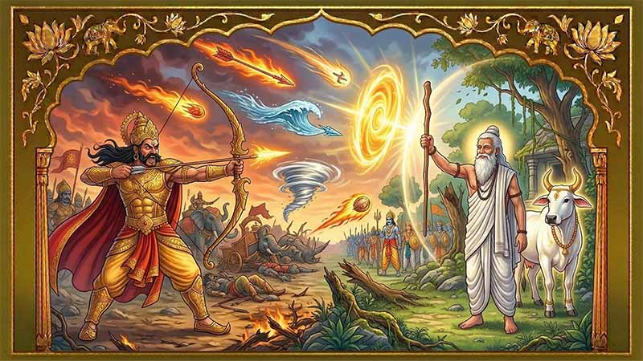
वि
श्वामित्रले त्रिशङ्कुको कथा सुनाइसकेपछि, रामले उत्सुकतापूर्वक सोध्नुभयो, "गुरुदेव, हजुरले तिनै महान् ऋषि वशिष्ठलाई पराजित गर्न ती सबै डरलाग्दा हतियारहरू प्रयोग गर्नुभएको थियो? [cite: 241] कृपया मलाई त्यो युद्धको कथा सुनाउनुहोस् [cite: 241]।" विश्वामित्रको अनुहारमा अलिकति गम्भीरता छायो [cite: 242]। उहाँले रामलाई हेर्दै भन्नुभयो, "हो राम, त्यो मेरो जीवनको सबैभन्दा ठूलो गल्ती थियो [cite: 242]। सुन्न चाहन्छौ भने म तिमीलाई मेरो र वशिष्ठको युद्धको कथा सुनाउँछु [cite: 242]।" विश्वामित्रले भन्न थाल्नुभयो, "म सुरुमा महर्षि थिइनँ, राम [cite: 243]। म एक शक्तिशाली राजा थिएँ र मेरो राज्य निकै ठूलो थियो [cite: 243]। एकपटक म मेरो सेनासहित जङ्गलमा सिकार खेल्न गएको थिएँ [cite: 243]। सिकार खेल्दै गर्दा हामी निकै थाकेका थियौं र भोक पनि लागेको थियो [cite: 243]। त्यही बेला मैले नजिकै एउटा सुन्दर आश्रम देखेँ [cite: 243]। त्यो आश्रम महान् ऋषि वशिष्ठको थियो [cite: 243]।" "हामी आश्रममा पुग्यौँ [cite: 244]। ऋषि वशिष्ठले हाम्रो भव्य स्वागत गर्नुभयो र मलाई र मेरो सम्पूर्ण सेनालाई स्वादिष्ट भोजन गराउनुभयो [cite: 244]। म छक्क परेँ, यस्तो सानो आश्रममा कसरी यति धेरै मानिसका लागि एकैछिनमा यति मीठो खाना तयार भयो? [cite: 244] मैले वशिष्ठलाई यसको रहस्य सोधेँ [cite: 244]। उहाँले मुस्कुराउँदै भन्नुभयो, 'हे राजन्, यो सबै कामधेनु गाई (शबला) को कृपा हो [cite: 244]। यो गाईले जे माग्यो त्यही दिन सक्छे [cite: 244]।'"
"शबलालाई देखेपछि मेरो मनमा लोभ पलायो [cite: 245]। मैले सोचें, यस्तो जादुयी गाई त म जस्तो राजाको दरबारमा हुनुपर्छ [cite: 245]। मैले वशिष्ठलाई भनें, 'हे ऋषि, म तपाईँलाई यो गाईको सट्टामा एक लाख गाई र सुनचाँदी दिन्छु [cite: 245]। कृपया यो गाई मलाई दिनुहोस् [cite: 245]।' तर वशिष्ठले अस्वीकार गर्दै भन्नुभयो, 'राजन्, शबला मेरो परिवारको सदस्य जस्तै हो [cite: 246]। म यसलाई कुनै पनि मूल्यमा बेच्न सक्दिनँ [cite: 246]।'" "वशिष्ठको कुरा सुनेर म क्रोधित भएँ [cite: 247]। मैले मेरो सेनालाई जबरजस्ती शबलालाई लिएर जान आदेश दिएँ [cite: 247]। मेरा सिपाहीहरूले शबलालाई बाँधेर तान्न थाले [cite: 247]। शबला रुँदै वशिष्ठकहाँ गई र भनी, 'हे ऋषि, मलाई किन यो क्रुर राजाको हातमा सुम्पिँदै हुनुहुन्छ?' [cite: 247] वशिष्ठले दुःखी हुँदै भन्नुभयो, 'शबला, म एक ब्राह्मण हुँ र उनी एक राजा हुन् [cite: 248]। म उनीसँग युद्ध गर्न सक्दिनँ [cite: 248]।'"
"यो सुनेर शबला क्रोधित भई [cite: 249]। उसले आफ्नो योग बलबाट हजारौं शक्तिशाली योद्धाहरू (पह्लव, शक र यवनहरू) उत्पन्न गरी र मेरो सेनामाथि आक्रमण गर्न लगाई [cite: 249]। मेरो सेना क्षणभरमै नष्ट भयो [cite: 249]। म आफैं पनि पराजित भएर भाग्नुपर्यो [cite: 249]।" "यो अपमान म सहन सकिनँ [cite: 250]। मैले मेरो राज्य छोडेर हिमालयमा भगवान शिवको कठोर तपस्या गर्न थालें [cite: 250]। मेरो तपस्याबाट प्रसन्न भएर शिवले मलाई दिव्य अस्त्रशस्त्रहरू (आग्नेयास्त्र, ब्रह्मास्त्र आदि) प्रदान गर्नुभयो [cite: 250]। ती अस्त्रहरू प्राप्त गरेपछि म बदला लिन पुनः वशिष्ठको आश्रममा पुगें [cite: 250]।" "मैले आश्रममा आगो लगाइदिएँ र ऋषिमुनिहरूलाई आतङ्कित पारें [cite: 251]। तब वशिष्ठ बाहिर आउनुभयो र आफ्नो ब्रह्मदण्ड (एउटा सानो काठको लौरो) हातमा लिएर मेरो अगाडि उभिनुभयो [cite: 251]। मैले उहाँमाथि एकपछि अर्को गर्दै सबै दिव्य अस्त्रहरू प्रहार गरें, तर उहाँको ब्रह्मदण्डले ती सबै अस्त्रहरूलाई सजिलै निल्दियो [cite: 251]। अन्तमा मैले ब्रह्मास्त्र नै प्रहार गरें, तर त्यो पनि ब्रह्मदण्डको अगाडि निस्तेज भयो [cite: 251]।" "त्यस दिन मैले एउटा ठूलो पाठ सिकें, राम [cite: 252]। मैले बुझें कि क्षत्रियको बल र हतियारभन्दा ब्राह्मणको आध्यात्मिक र योग बल धेरै शक्तिशाली हुन्छ [cite: 252]। त्यही हारले मलाई तपस्या गर्न र ब्रह्मर्षि बन्न प्रेरित गर्यो [cite: 252]।" विश्वामित्रले लामो सास फेर्दै कथा टुङ्ग्याउनुभयो [cite: 253]। राम र लक्ष्मण यो कथा सुनेर गहिरो सोचमा पर्नुभयो [cite: 253]। "गुरुदेव, हजुरको यो कथाले हामीलाई धेरै कुरा सिकाएको छ," रामले आदरपूर्वक भन्नुभयो [cite: 254]। "शारीरिक बलभन्दा आध्यात्मिक ज्ञान सधैं माथि हुन्छ भन्ने कुरा हामीले बुझ्यौं [cite: 255]।" रात धेरै छिप्पिसकेको थियो [cite: 256]। सबैले विश्वामित्रलाई प्रणाम गरे र विश्राम गर्न आफ्नो पालमा गए [cite: 256]। अर्को बिहान उहाँहरू मिथिलाको राजा जनकको दरबारतर्फ प्रस्थान गर्ने तयारीमा हुनुहुन्थ्यो [cite: 257]。
अध्याय ८: विश्वामित्रको ब्रह्मर्षिको यात्रा (Chapter 8: Vishwamitra Becomes a Brahmarshi) [cite: 258]
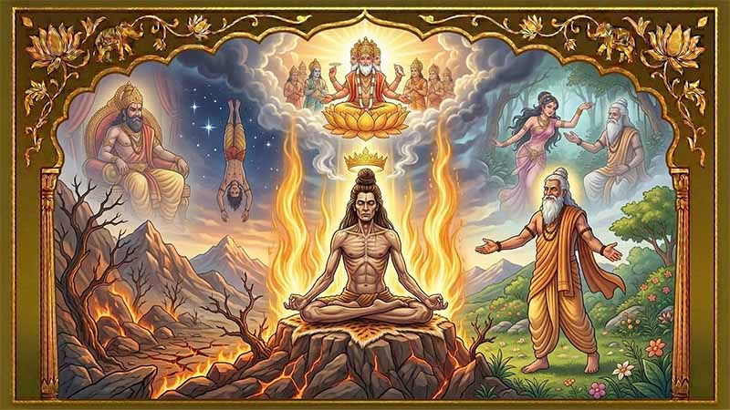
रा
जा जनकका मुख्य पुरोहित तथा महर्षि गौतमका छोरा शतानन्दले राम र लक्ष्मणतर्फ हेर्दै विश्वामित्रको महान् जीवनकथा अगाडि बढाउनुभयो [cite: 259]। शतानन्दले भन्नुभयो, "हे राम! महर्षि वशिष्ठको ब्रह्मदण्डसामु आफ्ना सबै दिव्य अस्त्रहरू विफल भएपछि विश्वामित्रले एउटा ठूलो सत्य बुझे— 'क्षत्रियको शारीरिक र सैन्य बलभन्दा ब्राह्मणको आध्यात्मिक र तपोबल धेरै गुणा शक्तिशाली हुन्छ [cite: 260]।' त्यसपछि उनले आफ्नो सम्पूर्ण राज्य र राजकीय सुखसुविधा त्यागिदिने अठोट गरे [cite: 261]।" "आफ्नी पत्नीलाई साथमा लिएर विश्वामित्र दक्षिणतर्फ प्रस्थान गरे र वर्षौंसम्म अत्यन्तै कठोर तपस्या गरे [cite: 262]। उनको तपस्याबाट प्रसन्न भएर भगवान ब्रह्मा प्रकट हुनुभयो र उनलाई 'राजर्षि' (राजकीय ऋषि) को उपाधि प्रदान गर्नुभयो [cite: 262]। तर विश्वामित्र यसबाट सन्तुष्ट भएनन् [cite: 262]। उनी वशिष्ठ जस्तै 'ब्रह्मर्षि' बन्न चाहन्थे [cite: 262]।" "आफ्नो लक्ष्य प्राप्तिका लागि विश्वामित्रले अझ कठोर तपस्या गर्न थाले [cite: 263]। यसै समयमा इक्ष्वाकु वंशका राजा त्रिशङ्कु थिए [cite: 263]। उनी स-शरीर (यही नश्वर शरीरमा) स्वर्ग जाने ठूलो इच्छा राख्थे [cite: 263]। उनले आफ्ना गुरु वशिष्ठलाई यसका लागि यज्ञ गरिदिन आग्रह गरे, तर वशिष्ठले यो प्रकृतिको नियम विरुद्ध भएको भन्दै अस्वीकार गरिदिए [cite: 263]। निराश भएका त्रिशङ्कु वशिष्ठका सय जना छोराहरूकहाँ गए [cite: 263]। तर उनीहरू पनि राजाको यस्तो जिद्दी देखेर क्रोधित भए र उनलाई 'चण्डाल' (समाजको सबैभन्दा तल्लो र अपवित्र स्तर) बन्ने श्राप दिए [cite: 263]। श्रापको प्रभावले राजा त्रिशङ्कुको सुन्दर रूप कुरुप र भयानक भयो [cite: 264]। आफ्ना मन्त्री र प्रजाहरूले त्यागेपछि उनी जङ्गलमा भौंतारिँदै महर्षि विश्वामित्रको आश्रममा पुगे [cite: 265]। विश्वामित्रलाई उनको दयनीय अवस्था देखेर दया लाग्यो [cite: 265]। उनले त्रिशङ्कुलाई स-शरीर स्वर्ग पठाउने वाचा गरे र एक महायज्ञको आयोजना गरे [cite: 266]।"
"यज्ञमा आहुति दिन सबै देवताहरूलाई बोलाइयो, तर चण्डालको यज्ञ भन्दै कुनै पनि देवता आएनन् [cite: 267]। यसबाट विश्वामित्र अत्यन्तै क्रोधित भए [cite: 267]। उनले आफ्नो सम्पूर्ण तपोबल प्रयोग गर्दै भने— 'हे त्रिशङ्कु! मेरो तपस्याको शक्तिले तिमी स-शरीर स्वर्ग जाऊ!' [cite: 268] विश्वामित्रको असीमित शक्तिले त्रिशङ्कु हावामा उड्दै स्वर्गको ढोकामा पुगे [cite: 269]। तर देवराज इन्द्रले उनलाई रोके र भने, 'तिमी आफ्ना गुरुको श्राप पाएका मूर्ख हौ, तिम्रो लागि स्वर्गमा कुनै ठाउँ छैन [cite: 270]। उल्टो टाउको लगाएर पृथ्वीमै खस्!' त्रिशङ्कु चिच्याउँदै तल खस्न थाले [cite: 271]। उनले विश्वामित्रलाई गुहारे [cite: 271]। विश्वामित्रले उनलाई बीच आकाशमै रोक्दै आदेश दिए— 'पर्ख! त्यहीँ बस!' [cite: 272] आफ्नो सङ्कल्प र वचन पूरा गर्न विश्वामित्रले दक्षिण दिशाको आकाशमा नयाँ तारा, नयाँ नक्षत्र र एउटा 'नयाँ स्वर्ग' नै निर्माण गर्न थाले [cite: 273]। उनले इन्द्रको विकल्पमा नयाँ देवताहरू समेत बनाउने धम्की दिए [cite: 274]। विश्वामित्रको यो भयानक शक्ति र क्रोध देखेर देवताहरू त्रसित भए [cite: 274]। उनीहरूले विश्वामित्रलाई शान्त पार्दै सम्झौता गरे— 'हे महर्षि! त्रिशङ्कु हजुरले बनाएको यसै नयाँ स्वर्गमा, नयाँ ताराहरूको बीचमा देवता जस्तै सधैंभरि बस्नेछन् [cite: 275]। तर उनी उल्टो टाउको लगाएरै रहनेछन् [cite: 276]।' विश्वामित्रले यो सर्त स्वीकार गरे [cite: 277]। यसरी त्रिशङ्कु स्वर्ग र पृथ्वीको बीचमा, दक्षिणी आकाशमा सधैंका लागि झुन्डिएर रहे [cite: 277]। विश्वामित्रको यो अद्भुत शक्ति देखेर सम्पूर्ण देवताहरू आश्चर्यचकित भए [cite: 278]।"
"विश्वामित्रको निरन्तर बढ्दै गएको तपोबल देखेर इन्द्र डराए [cite: 279]। विश्वामित्रको ध्यान भङ्ग गर्न इन्द्रले स्वर्गकी सबैभन्दा सुन्दरी अप्सरा मेनकालाई पृथ्वीमा पठाए [cite: 279]। जङ्गलमा तपस्या गरिरहेका विश्वामित्र मेनकाको अलौकिक सौन्दर्य देखेर मोहित भए [cite: 279]। उनले आफ्नो तपस्या बिर्सिए र मेनकासँग १० वर्षसम्म जीवन बिताए [cite: 279]। तर जब उनलाई आफ्नो गल्ती र इन्द्रको छलको महसुस भयो, उनी क्रोध र पश्चात्तापले भरिए [cite: 279]। उनले मेनकालाई त्यहीँ छाडे र आफ्नो इन्द्रियहरूलाई वशमा राख्न हिमालयको कौशिकी नदीको किनारमा गएर पुनः घोर तपस्या सुरु गरे [cite: 279]।" "हजारौं वर्षको तपस्यापछि भगवान ब्रह्मा फेरि प्रकट हुनुभयो र उनलाई 'महर्षि' को उपाधि दिनुभयो [cite: 280]। तर ब्रह्माले सम्झाउँदै भन्नुभयो— 'विश्वामित्र, तिमी अझै ब्रह्मर्षि बनेका छैनौ, किनकि तिमीले अझै आफ्नो क्रोध र कामवासनामाथि पूर्ण विजय प्राप्त गर्न सकेका छैनौ [cite: 280]।' "यसपछि इन्द्रले विश्वामित्रको तपस्या भङ्ग गर्न रम्भा नामकी अर्की अप्सरालाई पठाए [cite: 281]। यस पटक विश्वामित्र कामवासनाको सिकार त भएनन्, तर उनी अत्यन्तै क्रोधित भए [cite: 281]। उनले रम्भालाई १०,००० वर्षसम्म ढुङ्गा बन्ने श्राप दिए [cite: 281]। तर यो श्राप दिँदा उनले आफ्नो क्रोधलाई नियन्त्रण गर्न नसकेका कारण उनको सम्पूर्ण तपोबल फेरि नष्ट भयो [cite: 281]।"
"अब भने विश्वामित्रले दृढ सङ्कल्प गरे [cite: 282]। उनले श्वास रोकेर, अन्न र जल त्याग गरेर, र कसैसँग नबोली मौन रहेर सबैभन्दा कठोर तपस्या सुरु गरे [cite: 282]। वर्षौं बित्यो, उनी काठको मुढा जस्तै एकै ठाउँमा उभिरहे [cite: 282]। उनको तपस्याको तेज यति शक्तिशाली भयो कि उनको शिरबाट धुवाँ निस्कन थाल्यो र सम्पूर्ण ब्रह्माण्ड डगमगाउन थाल्यो [cite: 282]।" "त्रसित भएका देवताहरू ब्रह्मालाई अगाडि लगाएर विश्वामित्रसामु प्रकट भए [cite: 283]। ब्रह्माले प्रसन्न हुँदै भन्नुभयो— 'हे विश्वामित्र! तिमीले आफ्ना सबै इन्द्रियहरू र क्रोधमाथि विजय प्राप्त गरेका छौ [cite: 283]। आजदेखि तिमीलाई ब्राह्मणको सर्वोच्च पद प्राप्त भयो, तिमी अब 'ब्रह्मर्षि' हौ [cite: 283]।' विश्वामित्रले हात جوड्दै भन्नुभयो, 'प्रभु, यदि म साँच्चै ब्रह्मर्षि भएको हुँ भने महान् ऋषि वशिष्ठले मलाई यो रूपमा स्वीकार गरुन् [cite: 284]।' "त्यही क्षण, महर्षि वशिष्ठ त्यहाँ आइपुग्नुभयो [cite: 285]। उहाँले आफ्ना पुराना शत्रुता बिर्सेर विश्वामित्रलाई प्रेमपूर्वक अँगालो हाल्नुभयो र 'ब्रह्मर्षि' को रूपमा स्वीकार गर्नुभयो [cite: 285]। यसरी आफ्नो अदम्य साहस र कठोर तपस्याको बलले विश्वामित्रले असम्भवलाई सम्भव बनाए [cite: 285]।"
कथाको अन्त्य गर्दै शतानन्दले रामलाई हेर्दै भन्नुभयो, "हे राम! यस्ता महान् अठोट, असीमित शक्ति र ज्ञानका धनी ब्रह्मर्षि विश्वामित्र आज हजुरको मार्गदर्शक हुनुहुन्छ [cite: 286]। हजुर साँच्चै नै भाग्यशाली हुनुहुन्छ [cite: 286]।" यो अद्भुत कथा सुनेपछि राजा जनक, राम र लक्ष्मणले गहिरो श्रद्धा र आदरका साथ महर्षि विश्वामित्रको चरण स्पर्श गर्दै ढोग्नुभयो [cite: 287]। दरबारको वातावरण शान्ति र भक्तिभावले भरिपूर्ण भयो [cite: 288]。
अध्याय ९: राम र सीताको विवाह (Chapter 9: The Wedding of Ram and Sita)
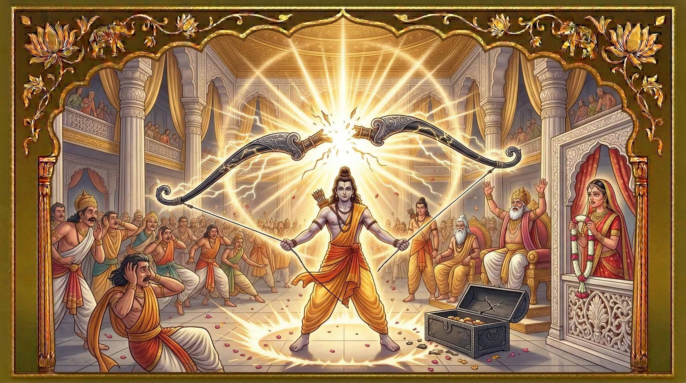
अ
र्को बिहान, मिथिलाका राजा जनकले महर्षि विश्वामित्र, राम र लक्ष्मणलाई आफ्नो भव्य यज्ञशालामा आमन्त्रण गर्नुभयो। [cite: 290] राजा जनकले राम र लक्ष्मणको तेजस्वी अनुहार हेर्दै विश्वामित्रलाई सोध्नुभयो, "हे महर्षि, यी दुई दिव्य राजकुमारहरू को हुन्? उहाँहरूको उपस्थिति नै सूर्य र चन्द्रमा जत्तिकै चम्किलो छ।" [cite: 291] विश्वामित्रले मुस्कुराउँदै राम र लक्ष्मणको परिचय दिनुभयो र ताडका वधदेखि अहल्याको उद्धारसम्मका सबै पराक्रमहरू सुनाउनुभयो। [cite: 292] त्यसपछि उहाँले भन्नुभयो, "हे राजन्, राम यहाँ हजुरको दरबारमा रहेको भगवान शिवको प्रसिद्ध धनुष हेर्न चाहनुहुन्छ।" [cite: 293] राजा जनकले गहिरो सास फेर्दै त्यो शिव धनुष (पिनाक) को इतिहास सुनाउन थाल्नुभयो। [cite: 294] "धेरै वर्षअघि, भगवान शिवले यो असीमित शक्ति भएको धनुष मेरा पूर्वज देवरातलाई सुम्पिनुभएको थियो। त्यसबेलादेखि हामीले यसलाई एक पवित्र धरोहरको रूपमा दिनहुँ पूजा गर्दै आएका छौं।" [cite: 295]
जनकले भावुक हुँदै अगाडि भन्नुभयो, "केही वर्षअघि, मैले खेत जोत्दा जमिनमुनि एउटी अत्यन्तै सुन्दर बालिका फेला पारेँ। मैले उनको नाम 'सीता' राखेँ र आफ्नै छोरी जस्तै हुर्काएँ। सीता बढ्दै जाँदा उनको सौन्दर्य र गुणहरू पनि बढ्दै गए। मैले प्रण गरेँ कि सीताको विवाह त्यस्तो असाधारण वीर पुरुषसँग मात्र गरिदिनेछु, जसले यो विशाल शिव धनुषलाई उचाल्न र त्यसमा ताँदो चढाउन सकोस्।" [cite: 296] जनकले दुःखी हुँदै भन्नुभयो, "यो सर्त पूरा गर्न देश-देशावरबाट कैयौं शक्तिशाली राजाहरू र राजकुमारहरू आए। तर ताँदो चढाउनु त परको कुरा, कसैले यो धनुषलाई अलिकति हल्लाउन समेत सकेनन्। मलाई त लाग्न थालेको छ कि मेरी छोरी सीताको लागि यो पृथ्वीमा कोही पनि योग्य पुरुष छैनन्।" [cite: 297] विश्वामित्रले रामतर्फ हेरेर आज्ञा दिनुभयो, "राम, गएर त्यो शिव धनुष हेर।" [cite: 298] गुरुको आज्ञा पाउनेबित्तिकै राम आफ्नो आसनबाट उठ्नुभयो। उहाँले विशाल फलामको सन्दुकमा राखिएको त्यो धनुषलाई हेर्नुभयो र आदरपूर्वक प्रणाम गर्नुभयो। [cite: 299] त्यसपछि, उपस्थित सबैलाई आश्चर्यचकित पार्दै, रामले त्यो भारी धनुषलाई एउटा सानो खेलौना जस्तै सहजै एउटै हातले उचाल्नुभयो। [cite: 300] उहाँले धनुषको एकापट्टि भुइँमा टेकाएर त्यसमा ताँदो (डोरी) चढाउनुभयो र डोरीलाई यति जोडले तान्नभयो कि त्यो शिव धनुष ठूलो गर्जनका साथ बीचैबाट दुई टुक्रा भएर भाँचियो। [cite: 301] धनुष भाँचिँदाको आवाज यति भयानक थियो कि विश्वामित्र, राजा जनक, राम र लक्ष्मण बाहेक दरबारमा उपस्थित सबैजना अचेत भएर भुइँमा ढले। [cite: 302] होसमा आएपछि राजा जनकको खुसीको कुनै सीमा रहेन। उहाँका आँखा हर्षका आँसुले भरिए। [cite: 303]
उहाँले भन्नुभयो, "हे महर्षि! आज मैले आफ्नै आँखाले रामको अद्भुत र अकल्पनीय पराक्रम देखेँ। मेरी छोरी सीताले रामजस्तो वीर पति पाउनु मेरो वंशकै लागि ठूलो गौरवको कुरा हो। यदि हजुरको अनुमति छ भने, म आजै मेरा दूतहरूलाई अयोध्या पठाएर राजा दशरथलाई विवाहको प्रस्ताव पठाउन चाहन्छु।" [cite: 304] विश्वामित्रले खुसीसाथ अनुमति दिनुभयो। [cite: 305] जनकका दूतहरू तीव्र गतिका घोडाहरूमा चढेर अयोध्या पुगे र राजा दशरथलाई रामको पराक्रम र जनकको प्रस्ताव सुनाए। [cite: 306] आफ्नो छोराको यस्तो महान् सफलता र विवाहको खबर सुनेर वृद्ध राजा दशरथ अत्यन्तै हर्षित हुनुभयो। [cite: 307] उहाँले तुरुन्तै गुरु वशिष्ठ, आफ्ना मन्त्रीहरू, र छोराहरू भरत र शत्रुघ्नका साथ विशाल सेना तथा बहुमूल्य उपहारहरू लिएर मिथिलातर्फ प्रस्थान गर्नुभयो। [cite: 308] चार दिनको लामो यात्रापछि दशरथको टोली मिथिला पुग्यो। राजा जनकले उहाँहरूलाई राज्यको सिमानामै गएर भव्य स्वागत गर्नुभयो। [cite: 309] दुई महान् राजाहरूबीचको मिलन अत्यन्तै प्रेमपूर्ण थियो। [cite: 310] विवाह समारोहअघि, महर्षि वशिष्ठले रामको इक्ष्वाकु वंशको गौरवशाली पुर्ख्यौली वर्णन गर्नुभयो भने राजा जनकले आफ्नो निमि वंशको इतिहास सुनाउनुभयो। [cite: 311]
त्यसपछि जनकले दशरथसामु एउटा सुन्दर प्रस्ताव राख्नुभयो, "हे महाराज दशरथ, म मेरी कान्छी छोरी उर्मिलाको विवाह लक्ष्मणसँग गरिदिन चाहन्छु। साथै, मेरा भाइ कुशध्वजका दुई गुणवती छोरीहरू माण्डवी र श्रुतकीर्तिको विवाह क्रमशः भरत र शत्रुघ्नसँग गरिदिने प्रस्ताव गर्दछु। यसरी हाम्रा दुई महान् वंशहरू सधैंका लागि एक अटुट बन्धनमा बाँधिनेछन्।" [cite: 312] राजा दशरथ र गुरु वशिष्ठले यो प्रस्तावलाई अत्यन्तै खुसीसाथ स्वीकार गर्नुभयो। [cite: 313] तय गरिएको शुभ मुहूर्तमा, सङ्गीत र मन्त्रोच्चारणका बीच चारै भाइ राजकुमारहरूको विवाह मिथिलाका चार राजकुमारीहरूसँग अत्यन्तै भव्यता र धुमधामका साथ सम्पन्न भयो। [cite: 314] रामले सीताको, लक्ष्मणले उर्मिलाको, भरतले माण्डवीको र शत्रुघ्नले श्रुतकीर्तिको हात समातेर पवित्र अग्निको परिक्रमा गरे। [cite: 315] स्वर्गबाट देवताहरूले फूलको वर्षा गरे र दुवै राज्यमा खुसीयाली छायो। [cite: 316]
अध्याय १०: मन्थरा र कैकेयीको षड्यन्त्र (Chapter 10: Manthara's Plot with Kaikeyi)
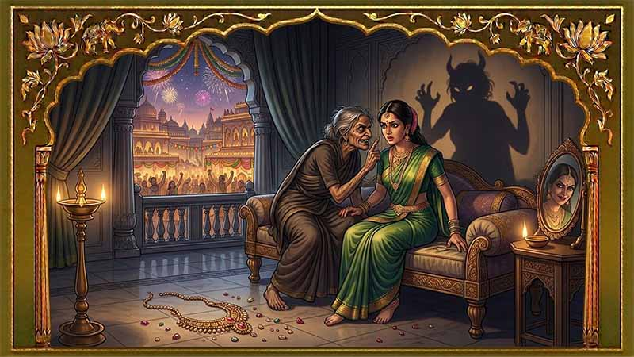
रा
म र सीताको विवाहपछि अयोध्यामा बाह्र वर्ष सुख र शान्तिपूर्वक बित्यो। [cite: 318] राजा दशरथ बिस्तारै वृद्ध हुँदै जानुभएको थियो। [cite: 318] एकदिन उहाँले आफ्नो उमेर र स्वास्थ्यलाई विचार गर्दै रामलाई अयोध्याको युवराज (उत्तराधिकारी) बनाउने निर्णय गर्नुभयो। [cite: 319] गुरु वशिष्ठ, मन्त्रीगण र अयोध्याका प्रजाहरूले राजाको यो प्रस्तावलाई सहर्ष र उत्साहका साथ स्वीकार गरे। [cite: 320] राम सबैका प्रिय थिए र राजा बन्नका लागि सर्वगुण सम्पन्न थिए। [cite: 321] दशरथले रामको अभिषेकको तयारी तुरुन्तै सुरु गर्न आदेश दिनुभयो। [cite: 322] रातारात अयोध्या सहरलाई दुलही झैं सजाइयो। [cite: 322] घर-घरमा दीप प्रज्वलन गरियो, सडकहरूमा सुगन्धित जल छर्कियो र चोक-चोकमा सङ्गीत गुञ्जिन थाल्यो। [cite: 323] पूरै सहर उत्सव र उल्लासको माहोलमा डुबेको थियो। [cite: 324] रानी कैकेयीकी एक कुबडी र कुटिल दासी थिई, जसको नाम मन्थरा थियो। [cite: 325] उसले महलको छतबाट सहरभरि भइरहेको सजावट र मानिसहरूको खुसीयाली देखी। [cite: 326] उसले अचम्म मान्दै छेउकै अर्की एक दासीलाई सोधी, "आज अयोध्यामा यस्तो कस्तो उत्सव मनाइँदैछ? मानिसहरू किन यति धेरै खुसी छन्?" [cite: 327] दासीले हर्षित हुँदै उत्तर दिई, "के तिमीलाई थाहा छैन? भोलि बिहानै राजकुमार रामको युवराजको रूपमा अभिषेक हुँदैछ।" [cite: 328]
यो खबर सुन्नेबित्तिकै मन्थराको मनमा ईर्ष्या र क्रोधको आगो दन्कियो। [cite: 329] ऊ हतार-हतार दौडिँदै रानी कैकेयीको कक्षमा पुगी। [cite: 329] कैकेयी आफ्नो कक्षमा विश्राम गरिरहेकी थिइन्। [cite: 330] मन्थराले उनलाई झकझकाउँदै उठाई र आत्तिँदै भनी, "उठ्नुहोस् रानी! तपाईंमाथि यत्रो ठूलो सङ्कट र विपत्ति आइपर्दा पनि तपाईं कसरी शान्त भएर सुत्न सक्नुहुन्छ?" [cite: 330] कैकेयीले आश्चर्य मान्दै सोधिन्, "के भयो मन्थरा? तिमी किन यति धेरै डराएकी छौ? के राम वा मेरो छोरा भरतलाई केही भयो?" [cite: 331] मन्थराले विषालु स्वरमा भनी, "राजा दशरथले भोलि रामलाई युवराज बनाउँदैछन्। उहाँले तपाईंको छोरा भरतलाई मामाघर पठाएर पछाडिबाट यस्तो षड्यन्त्र रचेका छन्।" [cite: 332] कैकेयी सुरुमा यो खबर सुनेर अत्यन्तै खुसी भइन्। [cite: 333] रामप्रतिको मायाले गर्दा उनले मन्थरालाई एउटा बहुमूल्य हार उपहार दिइन् र भनिन्, "मन्थरा, यो त अत्यन्तै खुसीको खबर हो! राम मलाई आफ्नै छोरा भरत जत्तिकै प्यारो छ। ऊ जेठो छोरा पनि हो र राज्यको उत्तराधिकारी बन्न सबैभन्दा योग्य छ।" [cite: 333]
तर मन्थराले क्रोधित हुँदै त्यो बहुमूल्य हार भुइँमा फालिदिई। [cite: 334] उसले कैकेयीको मनमा डर र ईर्ष्याको विष घोल्दै भनी, "तपाईं कति मूर्ख हुनुहुन्छ! आफ्नो विनाश आफ्नै आँखाले देखिरहनुभएको छैन। राम राजा भएपछि कौशल्या राजमाता हुनेछिन् र तपाईं जीवनभर उनको दासी बन्नुपर्नेछ। रामले राजा हुनेबित्तिकै आफ्नो सिंहासन सुरक्षित गर्न भरतलाई राज्यबाट निकाल्नेछन् वा मारिदिनेछन्। आफ्नो र आफ्नो छोराको अन्धकार भविष्यको बारेमा सोच्नुहोस्!" [cite: 334] मन्थराका निरन्तरका कुटिल कुराहरूले बिस्तारै कैकेयीको मन बदलियो। [cite: 335] रामप्रतिको उनको स्नेह र खुसी एकाएक ईर्ष्या र डरमा परिणत भयो। [cite: 335] आत्तिएर उनले सोधिन्, "अब मैले के गर्नुपर्छ त मन्थरा? भरतको रक्षा कसरी गर्ने?" [cite: 336] मन्थराले चलाखीपूर्ण तरिकाले सम्झाई, "के तपाईंलाई याद छ, वर्षौंअघि देवासुर सङ्ग्राममा तपाईंले राजा दशरथको ज्यान बचाउँदा उहाँले तपाईंलाई दुईवटा वरदान माग्न भन्नुभएको थियो? तपाईंले ती वरदान पछि मागौंला भनेर साँचेर राख्नुभएको थियो। ती वरदान माग्ने समय अब आएको छ। आज राती नै राजा दशरथसँग ती वरदान माग्नुहोस्। पहिलो वरदान— भरतलाई अयोध्याको राजा बनाउनुहोस्, र दोस्रो वरदान— रामलाई चौध वर्षको लागि जङ्गलमा वनवास पठाउनुहोस्। चौध वर्षसम्म जङ्गलमा रहँदा रामको शक्ति र प्रभाव कम हुनेछ र भरतले राज्यमा आफ्नो पकड बलियो बनाउनेछन्।" [cite: 337] मन्थराको यो कुटिल सल्लाह सुनेर कैकेयीले आफ्ना सबै बहुमूल्य गहना र सुन्दर रेशमी वस्त्रहरू फुकालेर भुइँमा फालिन्। [cite: 338] उनी मैलो र साधारण लुगा लगाएर रुँदै महलको कोपभवन (क्रोध कक्ष) मा गइन् र राजा दशरथलाई पर्खिन थालिन्। [cite: 339]
अध्याय ११: कैकेयीले दशरथलाई दिएको वचनको स्मरण गराउँछिन् (Chapter 11: Kaikeyi Holds Dasarath to His Promise)
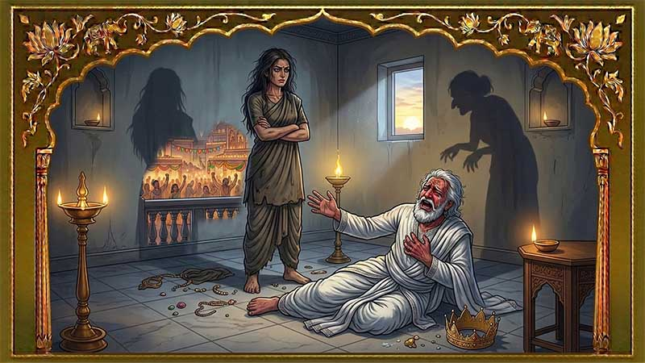
दि
नभरिको राजकीय काम सकेपछि राजा दशरथ आफ्नी सबैभन्दा प्रिय रानी कैकेयीलाई रामको अभिषेकको खुसीको खबर सुनाउन उनको कक्षमा जानुभयो। [cite: 341] तर सुन्दर कक्ष खाली थियो। [cite: 342] दासीहरूले डराउँदै महाराजलाई रानी 'कोपभवन' (क्रोध कक्ष) मा गएको जानकारी दिए। [cite: 342] दशरथ हतार-हतार कोपभवनमा पुग्नुभयो। [cite: 343] त्यहाँ उहाँले कैकेयीलाई मैलो लुगा लगाएर, आफ्ना बहुमूल्य गहनाहरू भुइँमा फ्याँकेर रुँदै जमिनमा लडिरहेको देख्नुभयो। [cite: 343] आफ्नी प्यारी रानीको यस्तो दयनीय अवस्था देखेर वृद्ध राजाको हृदय टुक्रियो। [cite: 344] उहाँले कैकेयीको नजिकै बसेर उनको कपाल सुम्सुम्याउँदै दुःखी स्वरमा सोध्नुभयो, "हे मेरी प्यारी रानी, तिमीलाई कसले यस्तो दुःख दियो? म त्यसलाई कडा सजाय दिनेछु। तिमीलाई कसले अपमान गर्यो? तिमी जे चाहन्छौ माग, म तिम्रो हरेक इच्छा पूरा गर्नेछु। यदि तिमी कसैको मृत्यु चाहन्छौ वा कसैलाई जेलबाट मुक्त गर्न चाहन्छौ भने पनि म त्यही गर्नेछु। सम्पूर्ण पृथ्वी र मेरो राज्यको सम्पत्ति तिम्रै हो। कृपया नरोऊ मेरी रानी।" [cite: 345] कैकेयीले अझै जोडले रुने नाटक गर्दै भनिन्, "मलाई कसैले अपमान गरेको छैन, तर मेरो एउटा इच्छा छ जुन तपाईंले मात्र पूरा गर्न सक्नुहुन्छ। यदि तपाईं मेरो इच्छा पूरा गर्ने वाचा गर्नुहुन्छ भने मात्र म तपाईंलाई बताउँछु।" [cite: 346]
दशरथ रामप्रतिको आफ्नो अथाह प्रेमको कारण अन्धो हुनुभएको थियो। [cite: 347] उहाँले आफ्नो सबैभन्दा प्यारो छोरा रामको नाममा कसम खाँदै भन्नुभयो, "कैकेयी, मलाई मेरो ज्यानभन्दा पनि प्यारो मेरो छोरा रामको कसम, म तिम्रो इच्छा जसरी पनि पूरा गर्नेछु।" [cite: 347] रामको नाममा कसम खाएको सुनेपछि कैकेयीले सूर्य, चन्द्रमा, देवता र आकाशलाई साक्षी राख्दै भनिन्, "हे महाराज, तपाईंले देवताहरूलाई साक्षी राखेर रामको कसम खानुभएको छ। के तपाईंलाई याद छ, देवासुर सङ्ग्राममा तपाईं गम्भीर घाइते हुँदा मैले तपाईंको ज्यान बचाएकी थिएँ र तपाईंले मलाई दुईवटा वरदान माग्न भन्नुभएको थियो? आज म ती दुई वरदान माग्न चाहन्छु।" [cite: 348] "मेरो पहिलो वरदान," कैकेयीको स्वर कठोर र चिसो भयो, "रामको लागि तयार गरिएको अभिषेकको सामग्रीले मेरो छोरा भरतलाई अयोध्याको राजा बनाइयोस्। र मेरो दोस्रो वरदान: रामलाई मुनिहरूको जस्तै वल्कल वस्त्र (बोक्राको लुगा) लगाएर आजै चौध वर्षका लागि दण्डक वनमा वनवास पठाइयोस्।" [cite: 349]
यो कठोर र अकल्पनीय सर्त सुनेर दशरथको हृदय छिया-छिया भयो। [cite: 350] उहाँलाई यो कुनै भयानक सपना जस्तो लाग्यो। [cite: 350] शोक र पीडाले उहाँ वज्रपात भएझैं भुइँमा ढल्नुभयो र बेहोस हुनुभयो। [cite: 351] लामो समयपछि होसमा आउँदा दशरथले कैकेयीलाई क्रोध र निराशाले हेर्दै भन्नुभयो, "हे क्रुर र दुष्ट रानी! तिमीले यस्तो भयानक कुरा कसरी सोच्न सक्यौ? रामले तिमीलाई कहिल्यै केही नराम्रो गरेको छैन। ऊ तिमीलाई आफ्नै आमा कौशल्यालाई भन्दा बढी माया र सम्मान गर्छ। मैले तिमी जस्ती विषालु सर्पलाई आफ्नो घरमा कसरी आश्रय दिएँ? तिमी जे चाहन्छौ लेऊ, तर कृपया मेरो रामलाई वनवास नपठाऊ।" [cite: 352] दशरथ कैकेयीको पाउमा पर्नुभयो, रुनुभयो र बिन्ती गर्नुभयो। [cite: 353] तर कैकेयी ढुङ्गा जस्तै कठोर रहिन्। [cite: 353] उनले दशरथलाई धर्म र सत्यको स्मरण गराउँदै भनिन्, "रघुकुलको परम्परा र धर्म नबिर्सनुहोस् महाराज। सत्य र धर्म नै राजाको सबैभन्दा ठूलो गुण हो। यदि तपाईंले आफ्नो वाचा तोड्नुभयो भने तपाईंको कीर्ति नष्ट हुनेछ र म यहीँ तपाईंको अगाडि विष खाएर आत्महत्या गर्नेछु।" [cite: 354] राजा दशरथ पूर्ण रूपमा असहाय र निराश हुनुभयो। [cite: 355] रातभरि उहाँ दुःख र पीडामा छटपटाइरहनुभयो, रामको नाम पुकार्दै रुँदै विलाप गरिरहनुभयो। [cite: 355] तर कैकेयीको कठोर र स्वार्थी हृदय अलिकति पनि पग्लिएन। [cite: 356]
अध्याय १२: रामलाई वनवासको आदेश (Chapter 12: The Order of Exile)
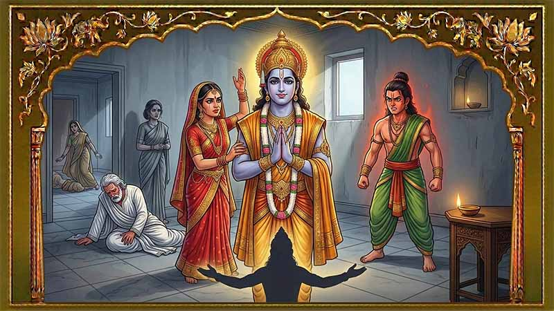
बि
हानको उज्यालोसँगै अयोध्यामा रामको अभिषेकको तयारी तीव्र हुँदै थियो। [cite: 358] तर कोपभवनमा राजा दशरथ शोक र पीडाले अचेत जस्तै हुनुहुन्थ्यो। [cite: 358] कैकेयीले राजाका मन्त्री सुमन्त्रलाई बोलाएर रामलाई तुरुन्तै त्यहाँ ल्याउन आदेश दिइन्। [cite: 359] सुमन्त्रको साथमा राम कैकेयीको कक्षमा प्रवेश गर्नुभयो। [cite: 359] रामले आफ्ना पितालाई भुइँमा ढलेको र अत्यन्तै दयनीय अवस्थामा देख्नुभयो। [cite: 360] उहाँले आत्तिएर कैकेयीलाई सोध्नुभयो, "माता! पिताजीलाई के भयो? उहाँ किन यति दुःखी र भावविह्वल हुनुहुन्छ? के मैले अन्जानमा उहाँको कुनै चित्त दुखाएँ वा मेरो कुनै गल्ती भयो?" [cite: 361] कैकेयीले निष्ठुरता र कठोरताका साथ सिधै भनिन्, "तिम्रा पितालाई केही भएको छैन राम। उहाँले मलाई विगतमा दुईवटा वरदान दिनुभएको थियो, जुन मैले आज मागेकी छु। तर उहाँ तिमीप्रतिको मोहले गर्दा त्यो वचन पूरा गर्न हिचकिचाइरहनुभएको छ। मेरो पहिलो वरदान हो— तिम्रो सट्टा मेरो छोरा भरतलाई अयोध्याको राजा बनाइयोस्। र दोस्रो वरदान हो— तिमीले राजसी वस्त्र त्यागेर, मुनिको भेष धारण गरी चौध वर्षसम्म दण्डक वनमा वनवास बिताउनुपर्नेछ।" [cite: 362]
यति ठूलो र कठोर कुरा सुन्दा पनि रामको अनुहारमा अलिकति पनि दुःख वा क्रोधको भाव देखिएन। [cite: 363] उहाँ सागर जस्तै शान्त रहनुभयो र हात जोड्दै भन्नुभयो, "माता, यसमा दुःख मान्नुपर्ने कुनै कुरा छैन। पिताजीको वचन पूरा गर्नु मेरो परम धर्म हो। भरतलाई खुसीसाथ राज्य सुम्पिनुहोस्, म आजै वनवासका लागि प्रस्थान गर्नेछु।" [cite: 364] यो सुनेर राजा दशरथ 'हा राम!' भन्दै रुँदै फेरि बेहोस हुनुभयो। [cite: 365] रामले आफ्ना पिताको चरण स्पर्श गर्नुभयो र आमा कौशल्यालाई भेट्न जानुभयो। [cite: 366] कौशल्या आफ्नो छोरालाई युवराजको रूपमा देख्न पूजापाठमा मग्न थिइन्। [cite: 367] तर जब रामले वनवासको खबर सुनाउनुभयो, उनी काठको मुढा ढलेझैं भुइँमा ढलिन्। [cite: 367] होसमा आएपछि उनले रुँदै विलाप गरिन्, "हे राम! तिमीबिना म कसरी बाँच्न सक्छु? म पनि तिमीसँगै वनमा जान्छु।" [cite: 368] तर रामले कौशल्यालाई सम्झाउँदै भन्नुभयो, "माता, पतिव्रता नारीको सबैभन्दा ठूलो धर्म आफ्नो पतिको सेवा गर्नु हो। पिताजी अहिले अत्यन्तै शोकमा हुनुहुन्छ, यस्तो बेला उहाँलाई हजुरको सहारा चाहिन्छ।" [cite: 369] रामका धर्मयुक्त कुरा सुनेर कौशल्याले भारी मनले उहाँलाई वनवास जाने अनुमति र आशीर्वाद दिइन्। [cite: 370]
त्यसपछि राम आफ्नी पत्नी सीतालाई सम्झाउन आफ्नो कक्षमा पुग्नुभयो। [cite: 371] रामले जङ्गलको कष्टकर जीवनको वर्णन गर्दै भन्नुभयो, "सीते, वनको जीवन अत्यन्तै कष्टकर हुन्छ। त्यहाँ भोक, तिर्खा, डरलाग्दा जङ्गली जनावरहरू र राक्षसहरूको बास हुन्छ। तिमीले राजमहलको सुखसुविधामा जीवन बिताएकी छौ, त्यसैले तिमी अयोध्यामै बसेर मातापिताको सेवा गर।" [cite: 371] तर सीताका आँखा आँसुले भरिए। [cite: 372] उनले दृढताका साथ भनिन्, "हे आर्यपुत्र! पत्नीको सुख पतिको साथमा मात्र हुन्छ। तपाईं जहाँ हुनुहुन्छ, मेरो लागि त्यहीँ अयोध्या हो। म तपाईंसँगै वनमा जानेछु र तपाईंको सेवा गर्नेछु। तपाईंको साथमा मलाई जङ्गलका काँडाहरू पनि फूल जस्तै लाग्नेछन्।" [cite: 372] सीताको अगाध प्रेम र दृढ निश्चयसामु रामले नाइँ भन्न सक्नुभएन र उनलाई पनि सँगै लिएर जाने निर्णय गर्नुभयो। [cite: 373]
अध्याय १३: अन्तिम बिदाइ र वल्कल धारण (Chapter 13: Final Goodbyes and Donning the Bark Clothes)
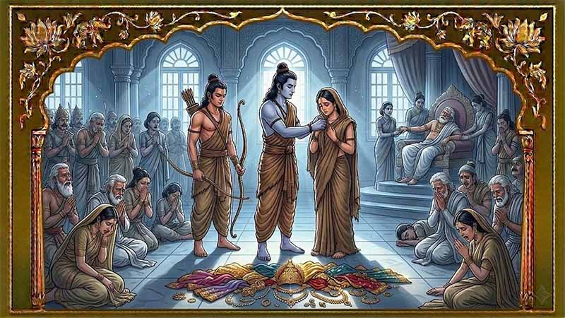
य
सैबीच, लक्ष्मणले यी सबै कुरा थाहा पाइसकेका थिए। [cite: 375] उनी हतार-हतार रामको कक्षमा पुगे र उहाँको चरणमा झरे। [cite: 375] क्रोधले प्रज्वलित लक्ष्मणले विद्रोह गरेर रामलाई जबरजस्ती सिंहासनमा बसाउने कुरा गरे। [cite: 376] तर रामले उनलाई शान्त पार्दै भन्नुभयो, "लक्ष्मण, क्रोधले मानिसको विवेक नष्ट गर्छ। यो सबै नियतिको खेल हो र धर्मको पालना गर्नु नै हाम्रो कर्तव्य हो।" [cite: 377] लक्ष्मणको गला अवरुद्ध भयो, "यदि तपाईं वनमा जाने निर्णय नै गर्नुभएको छ भने, मलाई पनि साथै लैजानुहोस्। तपाईं मलाई नाइँ भन्न सक्नुहुन्न।" [cite: 378] रामले सम्झाउनुभयो, "यदि तिमी पनि म सँगै गयौ भने, हाम्री आमाहरू कौशल्या र सुमित्राको हेरचाह कसले गर्छ? कैकेयीले उहाँहरूलाई पक्कै दुःख दिनेछिन्।" [cite: 379] तर लक्ष्मणले दृढतापूर्वक जवाफ दिए, "माता कौशल्यासँग आफ्नो र मेरी आमा सुमित्राको हेरचाह गर्न पर्याप्त स्रोतसाधन छ। म हजुरका हतियारहरू बोक्नेछु र बाटो देखाउनेछु।" [cite: 380] रामले लक्ष्मणको यो निस्वार्थ प्रेमलाई स्वीकार गर्नुभयो र उनलाई महान् ऋषि वरुणले राजा जनकलाई दिएका ती दुई शक्तिशाली धनुष र हतियारहरू लिएर आउन आज्ञा दिनुभयो। [cite: 381]
प्रस्थान गर्नुअघि रामले आफ्ना सम्पूर्ण सम्पत्ति ब्राह्मण, ऋषिमुनि र गरिबहरूलाई दान गर्ने निर्णय गर्नुभयो। [cite: 382] उहाँले गुरु वशिष्ठका छोरा सुयज्ञलाई बोलाएर बहुमूल्य आभूषण र सम्पत्ति दान गर्नुभयो। [cite: 383] लक्ष्मणले पनि आफ्नो तर्फबाट गाई, सुन र बहुमूल्य वस्त्रहरू दान गर्नुभयो। [cite: 384] सबै सम्पत्ति दान गरिसकेपछि रामले भन्नुभयो, "अब हामी दण्डकारण्य वनमा प्रस्थान गर्न तयार छौं। तर जानुअघि हामीले पिताजीको अन्तिम आशीर्वाद लिनुपर्छ।" [cite: 385] राम, सीता र लक्ष्मण राजमहलको सुखसुविधा छोडेर खाली खुट्टा सडकमा हिँड्दै राजा दशरथको कोपभवनतर्फ लाग्नुभयो। [cite: 386] जुन राजकुमारले सुनौलो रथमा सवार भएर हिँड्नुपर्थ्यो, उनी आज खाली खुट्टा हिँडिरहेको देखेर अयोध्याका प्रजाहरू स्तब्ध भए। [cite: 387] मानिसहरू रुँदै कैकेयीको स्वार्थीपनालाई सराप्न थाले। [cite: 388] जब उहाँहरू दशरथको कक्षमा पुग्नुभयो, दशरथ रामलाई देखेर भावविह्वल हुँदै अँगालो हाल्न अघि बढ्नुभयो, तर अचेत भएर भुइँमा ढल्नुभयो। [cite: 389]
होसमा आएपछि रामले कोमल स्वरमा भन्नुभयो, "पिताजी, हामी दण्डकारण्य वनमा प्रस्थान गर्दैछौं। कृपया हामीलाई आशीर्वाद दिनुहोस्।" [cite: 390] दशरथको स्वर कामिरहेको थियो, "हे छोरा, म कैकेयीलाई दिएको वरदानका कारण बाँधिएको छु। मलाई बन्दी बनाऊ र आजै अयोध्याको राजा बन।" [cite: 391] तर रामले नम्रतापूर्वक अस्वीकार गर्दै भन्नुभयो, "हजुरले अझै हजारौं वर्ष राज्य गर्नुहोस् पिताजी। म १४ वर्षको वनवास पूरा गरेर हजुरको चरणमा फर्कनेछु।" [cite: 392] कैकेयी राजाको छेउमा कुनै भावविना उभिएकी थिइन्। [cite: 393] सुमन्त्र र वृद्ध मन्त्री सिद्धार्थले कैकेयीको कठोरताको कडा आलोचना गरे। [cite: 393] सिद्धार्थले भने, "रानी कैकेयी, तपाईंले जे गरिरहनुभएको छ, त्यो अत्यन्तै अनुचित छ। रामलाई वनवास पठाउनु भनेको अयोध्यालाई अनाथ बनाउनु हो।" [cite: 394] तर कैकेयी आफ्नो जिद्दीबाट टसको मस भइनन्। [cite: 394] उल्टै रामले राज्यको कुनै पनि सम्पत्ति आफूसँग लैजान नपाउने अडान राख्दै उनले भनिन्, "यदि रामले राज्यको सम्पूर्ण सम्पत्ति लिएर गए भने, मेरो छोरा भरतले चाहिँ केमाथि शासन गर्ने?" [cite: 395] रामले शान्त स्वरमा भन्नुभयो, "म वनमा एक तपस्वीको जीवन बिताउन जाँदैछु। मलाई कुनै सुखसुविधा, सम्पत्ति र राजसी वस्त्रको आवश्यकता छैन। मलाई वनवासीले लगाउने वल्कल (रूखको बोक्राको) वस्त्र दिनुहोस्।" [cite: 396] कैकेयीले तुरुन्तै वल्कल वस्त्र ल्याएर दिइन्। [cite: 397] राम र लक्ष्मणले राजसी लुगा फुकालेर वल्कल धारण गर्नुभयो। [cite: 397] रेशमी वस्त्र मात्र लगाउन जानेकी सीताले वल्कल वस्त्र कसरी लगाउने भनेर अलमल पर्दा राम आफैंले उनलाई त्यो वस्त्र लगाउन मद्दत गर्नुभयो। [cite: 398] दरबारमा उपस्थित सबै मानिसहरू आँसु झार्दै आफ्ना प्रिय राजकुमारहरू र राजकुमारी वनवासीको भेषमा परिणत भएको हेर्न विवश भए। [cite: 399]
अध्याय १४: राम, सीता र लक्ष्मणको अयोध्याबाट प्रस्थान (Chapter 14: Ram, Sita, and Lakshman Leave Ayodhya)
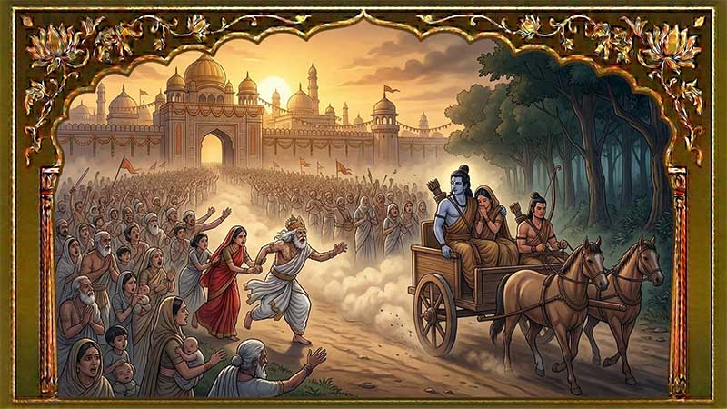
रा
म, सीता र लक्ष्मण मुनिहरूको जस्तै वल्कल (रूखको बोक्राको) वस्त्र धारण गरेर दरबारबाट बाहिर निस्कनुभयो। [cite: 401] मन्त्री सुमन्त्रले उहाँहरूको यात्राका लागि एउटा रथ तयार राखेका थिए। [cite: 402] राम, सीता र लक्ष्मण रथमा चढ्नेबित्तिकै सुमन्त्रले घोडाहरूलाई अघि बढाए। [cite: 402] त्यस क्षण सम्पूर्ण अयोध्या सहर गहिरो शोक र आँसुमा डुबेको थियो। [cite: 403] रथ अगाडि बढ्न थालेपछि, वृद्ध राजा दशरथ र माता कौशल्या रथको पछि-पछि दौडिन थाल्नुभयो। [cite: 404] उहाँहरू "हे राम! नजाऊ! रथ रोक सुमन्त्र!" भन्दै रुँदै विलाप गरिरहनुभएको थियो। [cite: 405] आफ्ना वृद्ध र शोकाकुल मातापिताको यस्तो दयनीय अवस्था देखेर रामको हृदय छिया-छिया भयो। [cite: 406] उहाँले यो हृदयविदारक दृश्य हेर्न नसकेर सुमन्त्रलाई आदेश दिनुभयो, "सुमन्त्र, रथलाई छिटो हाँक्नुहोस्। यदि पिताजीले सोध्नुभयो भने मैले हजुरको आवाज सुनिनँ भनिदिनुहोला। उहाँहरूको यो विलापले मेरो धर्मको मार्गलाई कमजोर बनाउन सक्छ।" [cite: 407] दरबार पछाडि छुट्यो, तर अयोध्याका हजारौं प्रजाहरू आफ्नो प्रिय राजकुमारलाई छोड्न चाहँदैनथे। [cite: 408]
वृद्ध, युवा, महिला र बालबालिकाहरू सबै रथको पछि-पछि दौडिरहेका थिए। [cite: 409] उडिरहेको धुलोको प्रवाह र मानिसहरूको रुवाइले वातावरण अत्यन्तै कारुणिक बनेको थियो। [cite: 410] रामले रथ रोकेर प्रजाहरूलाई धेरै सम्झाउनुभयो, "हे मेरा प्यारा प्रजाहरू! तपाईंहरू अयोध्या फर्कनुहोस्। मेरा पिता र मेरा भाइ भरतलाई मैले जस्तै माया र सम्मान दिनुहोस्। उहाँहरूको सेवा गर्नु नै मेरो लागि तपाईंहरूको सबैभन्दा ठूलो उपहार हुनेछ।" [cite: 411] तर प्रजाहरूले मानेनन् र वनसम्मै सँगै जाने जिद्दी गरिरहे। [cite: 412] दिनभरिको लामो यात्रापछि, घाम अस्ताउने बेलामा उहाँहरू तमसा नदीको किनारमा पुग्नुभयो। [cite: 413] रामले त्यस रात नदीकै किनारमा विश्राम गर्ने निर्णय गर्नुभयो। [cite: 413] रथको पछि-पछि आएका प्रजाहरू पनि नदीको किनारमा यत्रतत्र सुते। [cite: 414] दिनभरिको थकान, हिँडाइ र शोकका कारण प्रजाहरू छिट्टै गहिरो निद्रामा परे। [cite: 414] मध्यरातमा राम ब्युँझिनुभयो। [cite: 415] प्रजाहरू भुइँमा सुतिरहेको देखेर उहाँको मनमा दया पलायो। [cite: 415] उहाँले लक्ष्मणलाई बिस्तारै उठाउँदै भन्नुभयो, "लक्ष्मण हेर त, अयोध्याका प्रजाहरूले मलाई कति धेरै माया गर्छन्। तर उनीहरूले आफ्नो घरबार र परिवार छोडेर जङ्गलको कष्टकर जीवन बिताएको म हेर्न सक्दिनँ। उनीहरू ब्युँझनुअघि नै हामी यहाँबाट निस्कनुपर्छ।" [cite: 416]
रामले सुमन्त्रलाई चुपचाप रथ तयार गर्न लगाउनुभयो। [cite: 417] प्रजाहरूलाई झुक्याउन सुमन्त्रले एउटा चलाखी गरे। [cite: 417] उनले रथलाई पहिले अयोध्याको दिशातर्फ केही बेर गुडाए, जसले गर्दा पाङ्ग्राको डोब अयोध्यातिरै फर्किएको देखियोस्। [cite: 418] त्यसपछि उनीहरूले सुटुक्क नदी पार गरे र रथलाई वनको दिशातर्फ अगाडि बढाए। [cite: 419] अर्को बिहान जब प्रजाहरू ब्युँझिए, उनीहरूले रामलाई त्यहाँ पाएनन्। [cite: 420] रथका पाङ्ग्राका डोबहरू खोज्दै जाँदा उनीहरूले डोब अयोध्यातिरै फर्किएको देखे र अलमलमा परे। [cite: 420] आफ्ना प्रिय रामलाई नदेखेपछि उनीहरू छाती पिटी-पिँटी रुँदै र विलाप गर्दै निराश भएर अयोध्या फर्किए। [cite: 421] उनीहरू फर्कंदा अयोध्या अब पूर्ण रूपमा शोकमग्न, नीरस र शून्य भएको थियो। [cite: 422] अयोध्याका प्रत्येक घरमा मानिसहरू रामको यादमा आँसु बगाइरहेका थिए। [cite: 423] यता, राम, सीता र लक्ष्मण भने तमसा नदी पार गरेर वनको गहिराइतर्फ आफ्नो यात्रा अगाडि बढाइरहनुभएको थियो। [cite: 424]
स्रष्टालाई सहयोग गर्नुहोस्
यो रामायणको डिजिटल संस्करण तयार पार्न गरिएको मेहेनतलाई कदर गर्दै स्वेच्छाले केही सहयोग (Donation) गर्न चाहनुहुन्छ भने तलका माध्यम प्रयोग गर्न सक्नुहुनेछ। यहाँको सहयोगले यस्तै अन्य धार्मिक ग्रन्थहरू डिजिटल रूपमा ल्याउन हौसला मिल्नेछ।